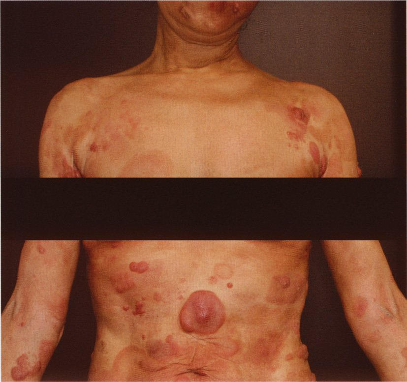
| 選択肢 | 解説 |
|---|---|
| ◯ ａ 菌状息肉症 | ①15年におよぶ「治りにくい湿疹」＝紅斑期、②5年前からの浸潤を触れる局面＝扁平浸潤期、③6か月前からの急速な結節・腫瘤の出現＝腫瘍期——紅斑期→扁平浸潤期→腫瘍期という年単位の三相性の経過は菌状息肉症〈mycosis fungoides〉に特異的である。病理で真皮の異型リンパ球浸潤＋表皮向性〈epidermotropism〉を認めることも合致する。末梢血に異型リンパ球（Sézary細胞）を認めない点がｃとの決定的な鑑別点である。 |
| ｂ 結節性痒疹 | 結節性痒疹は、掻破の反復により四肢伸側を中心に生じるドーム状で表面が角化・痂皮化した硬い小結節で、強い瘙痒があり数mm〜2cm程度で大きさが揃う。径8cmの茸状腫瘤にはならず、異型リンパ球の浸潤も来さない。 |
| ｃ Sézary症候群 | Sézary症候群は菌状息肉症の白血化型で、①紅皮症（体表の80％以上を占める全身の紅斑）、②全身のリンパ節腫脹、③末梢血中のSézary細胞（脳回状核の異型リンパ球）1,000/μL以上の三徴で定義される。本例は紅皮症ではなく限局した結節・腫瘤で、末梢血に異型リンパ球を認めないので該当しない。 |
| ｄ サルコイドーシス | 皮膚サルコイドーシスは、常色〜褐紅色の局面型・結節型・皮下型などをとり、硝子圧法で黄褐色の「リンゴゼリー様」を呈する。両側肺門リンパ節腫脹〈BHL〉・ぶどう膜炎・血清ACE上昇・病理での非乾酪性類上皮細胞肉芽腫が診断の軸で、本例の異型リンパ球浸潤とは病理像が全く異なる。 |
| ｅ スポロトリコーシス | スポロトリコーシスは Sporothrix schenckii による深在性真菌症で、園芸・農作業での外傷を契機に露出部（顔面・四肢）に単発の結節・潰瘍を生じ、リンパ管に沿って線状に新病変が並ぶ（リンパ管型）。15年かけて全身に多発する経過はとらず、病理では化膿性肉芽腫と菌要素を認める。 |
| 疾患 | 皮疹 | 末梢血 | 決め手 |
|---|---|---|---|
| 菌状息肉症 | 紅斑→局面→腫瘤（年単位） | 正常 | 表皮向性・Pautrier微小膿瘍・CD4陽性 |
| Sézary症候群 | 紅皮症＋全身リンパ節腫脹 | Sézary細胞≧1,000/μL | 白血化した菌状息肉症。予後不良 |
| 成人T細胞白血病〈ATL〉 | 紅斑・丘疹・結節・紅皮症と多彩 | 花弁状核細胞〈flower cell〉 | HTLV-1抗体陽性・九州沖縄・高Ca血症 |
| 皮膚白血病〈leukemia cutis〉 | 浸潤性の紅色結節 | 芽球 | 原疾患（AML等）が既知のことが多い |
| 偽リンパ腫 | 単発の紅色結節（虫刺・薬剤後） | 正常 | polyclonal・自然消退 |
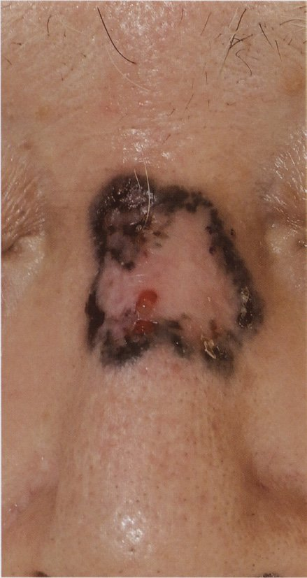
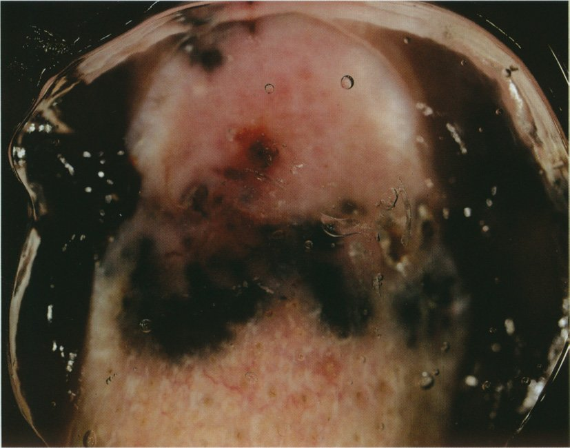
| 選択肢 | 解説 |
|---|---|
| ａ 悪性黒色腫 | 悪性黒色腫も黒色を呈するが、日本人では足底・爪などの末端黒子型が最多で、ダーモスコピーでは色調・構造が不均一（多彩な色調、不規則な色素ネットワーク、blue-white veil）を示す。「中心が凹み、縁が堤防状に隆起」という形態はとらない。本例のダーモスコピー像で見える樹枝状血管と類円形の大型青灰色胞巣は基底細胞癌のパターンである。 |
| ◯ ｂ 基底細胞癌 | ①高齢者、②顔面正中（鼻・内眼角）という基底細胞癌の最好発部位、③2年かけて緩徐に増大、④中心が陥凹し辺縁が堤防状に隆起する「rodent ulcer（結節潰瘍型）」、⑤易出血性だが自覚症状に乏しい、⑥リンパ節転移がない——すべて基底細胞癌〈basal cell carcinoma: BCC〉の典型像である。日本人のBCCは大半が黒色調（色素性BCC）で、ダーモスコピーで樹枝状血管〈arborizing vessels〉と青灰色類円形胞巣〈blue-gray ovoid nests〉、maple leaf-like areaを認める。 |
| ｃ 日光角化症 | 日光角化症〈光線角化症〉は表皮内癌で、顔面・手背など日光曝露部に生じる、境界不明瞭で紅色の、鱗屑・角化を伴う「ざらついた平坦な斑」である。長径20mmの隆起した結節にはならず、中心陥凹も来さない（Q.160・Q.184）。 |
| ｄ 有棘細胞癌 | 有棘細胞癌は、角化を伴う紅色の腫瘤で、表面が粗造・易出血性で、進行すると悪臭を伴う潰瘍を形成し、しばしば所属リンパ節転移を来す。本例は2年で20mmと緩徐で、リンパ節腫大もなく、境界明瞭な黒色結節である点が異なる。なおBCCはほとんど転移しないが、SCCは転移するという対比が国試では繰り返し問われる。 |
| ｅ 脂漏性角化症 | 脂漏性角化症〈老人性疣贅〉は良性腫瘍で、境界明瞭で「貼り付けたような（stuck-on）」褐色〜黒色の扁平隆起、表面は疣状・脂ぎった感じを示す。ダーモスコピーでは面皰様開大〈comedo-like openings〉と稗粒腫様囊腫〈milia-like cysts〉が特徴。中心の陥凹・出血・堤防状隆起はなく、増大しても潰瘍化しない。 |
| 疾患 | 臨床 | ダーモスコピー |
|---|---|---|
| 基底細胞癌 | 中心陥凹＋堤防状の縁、黒色光沢、易出血 | 樹枝状血管・青灰色卵円形胞巣・葉状領域 |
| 脂漏性角化症 | stuck-on、疣状、境界明瞭 | 面皰様開大・稗粒腫様囊腫・脳回状構造 |
| 色素性母斑 | 均一な褐色、対称性 | 規則的な色素ネットワーク・globular pattern |
| 悪性黒色腫 | 非対称・辺縁不整・多彩な色調・拡大 | 不規則ネットワーク・blue-white veil・末端では平行隆線パターン |
| 血管腫（血栓化） | 青黒色の柔らかい丘疹 | 赤紫〜黒色のラクーナ〈lacunae〉 |
| 選択肢 | 解説 |
|---|---|
| ａ 亜鉛欠乏症候群 | 亜鉛欠乏症（腸性肢端皮膚炎を含む）は、口囲・肛囲・四肢末端の境界明瞭なびらん性紅斑、脱毛、下痢、味覚障害、創傷治癒遅延を来す。原因は摂取不足・吸収不良・長期輸液・薬剤で、内臓悪性腫瘍のマーカーではない。 |
| ◯ ｂ 黒色表皮腫 | 黒色表皮腫〈acanthosis nigricans〉は、腋窩・頸部・鼠径などの間擦部に生じる、褐色調で乳頭腫状にざらついた色素沈着である。中高年に急速に発症し、口唇・口腔粘膜や手掌にも及ぶ広範な例（悪性型）は内臓悪性腫瘍、とくに胃癌の合併を強く示唆する（Q.168・Q.186）。デルマドローム〈dermadrome〉の代表格である。 |
| ｃ 弾性線維性仮性黄色腫 | 弾性線維性仮性黄色腫〈PXE〉はABCC6遺伝子変異による常染色体潜性〈劣性〉遺伝疾患で、頸部・腋窩に黄色小丘疹が敷石状に集簇し（plucked chicken skin）、眼底の血管様線条〈angioid streaks〉、消化管出血、早発性の動脈硬化・虚血性心疾患を合併する。悪性腫瘍とは関連しない。 |
| ｄ Ehlers-Danlos症候群 | Ehlers-Danlos症候群はコラーゲン代謝異常による遺伝性結合組織疾患で、皮膚の過伸展性・脆弱性（易出血、菲薄な瘢痕）、関節過可動性が主徴。血管型では動脈・腸管破裂を来すが、悪性腫瘍の合併は想起しない。 |
| ｅ Fabry病 | Fabry病はα-ガラクトシダーゼA欠損によるX連鎖性のライソゾーム病で、被膜様分布（下腹部〜殿部・大腿）の被角血管腫、四肢末端痛〈acroparesthesia〉、低汗症、角膜混濁、進行性腎不全、肥大型心筋症を来す。悪性腫瘍のマーカーではない。 |
| 皮膚所見 | 特徴 | 想起すべき腫瘍 |
|---|---|---|
| 黒色表皮腫 | 間擦部のざらつく褐色斑。悪性型は急速・広範 | 胃癌（腺癌） |
| Leser-Trélat徴候 | 脂漏性角化症が短期間に多発 | 胃癌・大腸癌 |
| 皮膚筋炎 | ヘリオトロープ疹・Gottron徴候 | 卵巣癌・胃癌・肺癌（40歳以上で悪性合併率が上がる） |
| Sweet病 | 発熱＋有痛性の浮腫性紅色局面＋好中球増多 | 骨髄異形成症候群・急性骨髄性白血病 |
| 壊疽性膿皮症 | 辺縁が穿掘性の潰瘍。pathergy陽性 | 炎症性腸疾患・骨髄増殖性疾患・骨髄腫 |
| 後天性魚鱗癬 | 成人発症の乾燥・鱗屑 | 悪性リンパ腫（Hodgkin） |
| 環状紅斑（匐行性回状紅斑） | 木目状に広がる環状紅斑 | 肺癌・乳癌 |
| Bazex症候群〈肢端角化症〉 | 耳介・鼻・手足の乾癬様角化 | 上気道・上部消化管の扁平上皮癌 |
| 選択肢 | 解説 |
|---|---|
| ａ 疥 癬 ―――――――――――― 外陰部 | 正しい組合せ。疥癬〈scabies〉はヒゼンダニ〈Sarcoptes scabiei〉の寄生による感染症で、指間・手関節屈側・腋窩・臍囲・外陰部など皮膚の柔らかい部位に好発する。とくに男性外陰部（陰囊・陰茎）の瘙痒性の紅色小結節（疥癬結節）は本症にほぼ特異的で、夜間に増悪する激しい瘙痒を伴う。 |
| ｂ ケロイド ――――――――――― 耳 介 | 正しい組合せ。ケロイドは前胸部（とくに胸骨前）・肩・上背部・恥骨上部・耳垂に好発する。耳介（耳垂）はピアス孔が契機となる代表的な好発部位である。共通するのは皮膚の緊張・伸展が大きい部位という点。 |
| ｃ 脂腺母斑 ――――――――――― 頭 部 | 正しい組合せ。脂腺母斑〈Jadassohn〉は頭部（有毛部）・顔面に好発し、出生時から存在する境界明瞭な黄色調の脱毛斑として気付かれる。思春期に隆起・疣状化し、成人期以降に基底細胞癌・乳頭状汗管囊胞腺腫などの二次腫瘍を生じうるのが臨床的な要点である。 |
| ｄ 血管性浮腫 ―――――――――― 口 唇 | 正しい組合せ。血管性浮腫〈Quincke浮腫〉は口唇・眼瞼など皮下組織が疎な部位に好発する。境界不明瞭で非圧痕性、瘙痒に乏しく数日で消退する。喉頭浮腫を来せば致死的で、遺伝性血管性浮腫〈HAE〉ではC1インヒビター欠損によりブラジキニンが蓄積するため抗ヒスタミン薬・アドレナリンが無効である。 |
| ◯ ｅ ケラトアカントーマ ―――――― 臍 部 | 誤り。ケラトアカントーマ〈keratoacanthoma〉は高齢者の日光曝露部——顔面（とくに鼻・頬）・手背・前腕に好発する。臍部は日光が当たらず、好発部位ではない。本症は数週間で急速に増大し、中央に角栓を伴うドーム状結節となり、数か月で自然消退するのが特徴である（Q.177）。 |
| 腫瘍 | 好発部位 | 成因の理屈 |
|---|---|---|
| 基底細胞癌 | 顔面正中（鼻・内眼角・上口唇） | 紫外線＋毛包由来 |
| 有棘細胞癌 | 顔面・手背・下口唇／熱傷瘢痕・慢性潰瘍・放射線皮膚炎 | 紫外線・慢性刺激・HPV |
| 日光角化症 | 顔面・頭部（禿頭）・手背 | 累積紫外線量に比例 |
| 悪性黒色腫（日本人） | 足底・爪部（末端黒子型が約半数） | 日本人は紫外線非依存の末端型が多い |
| 乳房外Paget病 | 外陰部・肛囲・腋窩 | アポクリン腺の分布域 |
| 血管肉腫 | 頭部・顔面（高齢者） | 頭部血管肉腫は特徴的 |
| ケラトアカントーマ | 顔面・手背 | 露光部 |
| 菌状息肉症 | 殿部・大腿など非露光部 | 紫外線と無関係 |
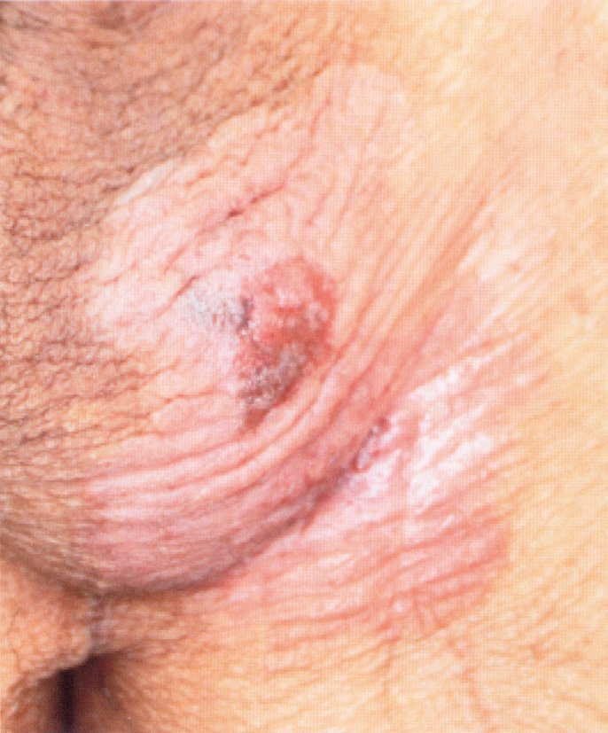
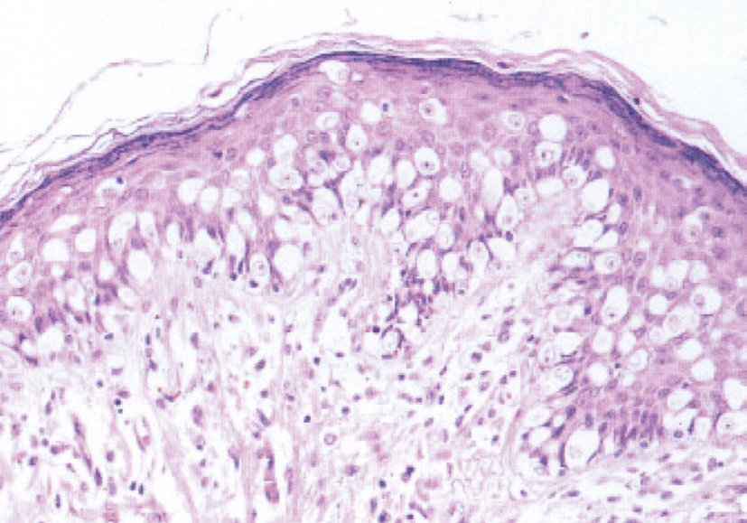
| 選択肢 | 解説 |
|---|---|
| ａ Bowen病 | Bowen病も表皮内癌で、境界明瞭で不整形の紅褐色局面（鱗屑・痂皮を伴う）として陰部にも生じうるため鑑別に挙がる。しかし病理は表皮全層の異型有棘細胞の増殖（full-thickness atypia）で、角化異常（異常角化細胞・多核細胞）を伴う。本例のような明るい胞体をもつ大型細胞（Paget細胞）の孤在性・巣状の散在はみられない（Q.183・Q.189）。 |
| ｂ 悪性黒色腫 | 悪性黒色腫であれば黒色調が主体となり、病理では表皮基底層〜真皮にメラニン顆粒を有する異型メラノサイトの増殖、HMB-45・Melan-A・S-100陽性を示す。本例は境界明瞭な紅色局面で黒色調に乏しく合致しない。 |
| ｃ 基底細胞癌 | 基底細胞癌は顔面正中に好発し、陰囊は極めてまれ。形態も黒色光沢のある結節で中心が潰瘍化するものであり、病理は基底細胞様腫瘍胞巣が表皮から真皮へ連続し、辺縁に柵状配列〈palisading〉と裂隙〈retraction artifact〉を示す。本例の像とは異なる。 |
| ｄ 脂漏性角化症 | 脂漏性角化症は良性の表皮腫瘍で、境界明瞭な褐色〜黒色の「貼り付けたような」扁平隆起。9か月で拡大し続ける紅色局面にはならず、病理も角化嚢腫〈horn cyst〉を伴う基底細胞様細胞の増殖で異型を伴わない。 |
| ◯ ｅ 乳房外Paget病 | ①高齢男性、②陰囊というアポクリン腺分布域の好発部位、③9か月以上かけて緩徐に拡大、④「湿疹」として外用治療されていたが治らない、⑤境界明瞭で紅色調の、一部白色調の混じる湿潤性局面——乳房外Paget病〈extramammary Paget disease〉の典型像である。病理では、表皮内に明るく広い胞体と大型核をもつPaget細胞が孤在性・胞巣状に散在（pagetoid spread）し、PAS陽性・CK7陽性・CEA陽性、S-100陰性で確定する。 |
| 乳房Paget病 | 乳房外Paget病 | |
|---|---|---|
| 部位 | 乳頭・乳輪 | 外陰部・肛囲・腋窩 |
| 本態 | ほぼ全例が乳管癌の表皮内進展（＝乳癌の一型） | 大半は原発性の表皮内腺癌（アポクリン腺由来） |
| 随伴腫瘍 | 乳癌の検索が必須 | 約1割で下部尿路・直腸肛門の腺癌の表皮内進展（続発性）→大腸内視鏡・膀胱鏡を検討 |
| 臨床 | 片側乳頭のびらん・鱗屑・分泌 | 境界明瞭な紅色局面。緩徐に拡大 |
| 治療 | 乳癌に準じる | 広範囲切除（マッピング生検） |
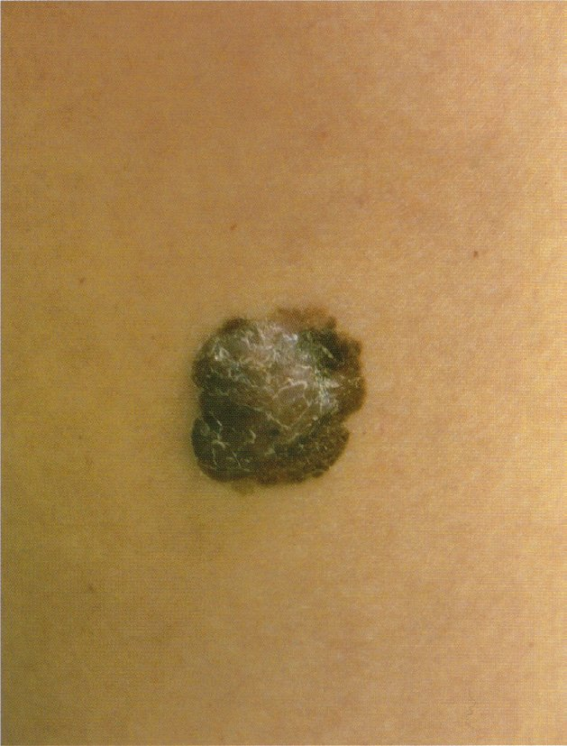
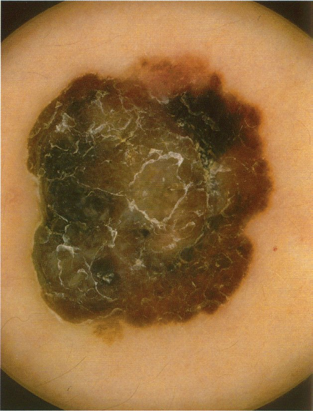
| 選択肢 | 解説 |
|---|---|
| ａ Bowen病 | Bowen病は表皮内の有棘細胞癌で、境界明瞭で不整形の、鱗屑・痂皮を伴う紅褐色の「局面」である。隆起した黒褐色の結節にはならず、ダーモスコピーで色素ネットワークも示さない。 |
| ◯ ｂ 悪性黒色腫 | ①長年存在した平坦な色素斑が、②直近3か月で急速に拡大・隆起し、③出血するようになり、④18×16mmと6mmを大きく超え、⑤所属リンパ節（右腋窩）を触知——「もともとあったほくろが最近変化した」という病歴は悪性黒色腫の最重要のサインである。ダーモスコピーでも、色調が多彩で辺縁が不整、不規則な色素ネットワークと青白色構造〈blue-white veil〉を認め悪性を支持する。 |
| ｃ 色素性母斑 | 色素性母斑〈母斑細胞母斑〉は良性で、左右対称・辺縁整・色調均一で、径は通常6mm以下、成長は身体の成長に比例して緩徐である。3か月で急速に増大し出血する経過は良性の経過ではない。本例のように長年の母斑を背景に黒色腫が発生することもあるので、「昔からあるから良性」とは言えない。 |
| ｄ 日光角化症 | 日光角化症は高齢者の露光部（顔面・手背）に生じる鱗屑を伴う紅色の平坦な角化性病変で、36歳の上腕に褐色結節として出る疾患ではない。 |
| ｅ 脂漏性角化症 | 脂漏性角化症は中高年に生じる良性腫瘍で、表面が疣状で「貼り付けたような」境界明瞭な褐色隆起。ダーモスコピーでは面皰様開大・稗粒腫様囊腫・脳回状構造を示し、急速増大・出血・リンパ節腫大は来さない。 |
| 所見 | 良性（色素性母斑） | 悪性黒色腫 |
|---|---|---|
| 体幹・四肢 | 規則的な色素ネットワーク、globular/homogeneous pattern、対称性 | 不規則ネットワーク、辺縁の突然の途切れ、blue-white veil、不規則な点・小球、退縮構造 |
| 足底（掌蹠） | 平行溝パターン〈parallel furrow pattern〉＝皮溝に沿って色素が並ぶ | 平行隆線パターン〈parallel ridge pattern〉＝皮丘（汗孔のある隆線）に色素が並ぶ |
| 爪 | 均一な幅・色調の縦条、境界明瞭 | 線の幅・間隔・色調が不均一、近位で幅広い三角形、Hutchinson徴候（爪郭への色素滲み出し） |
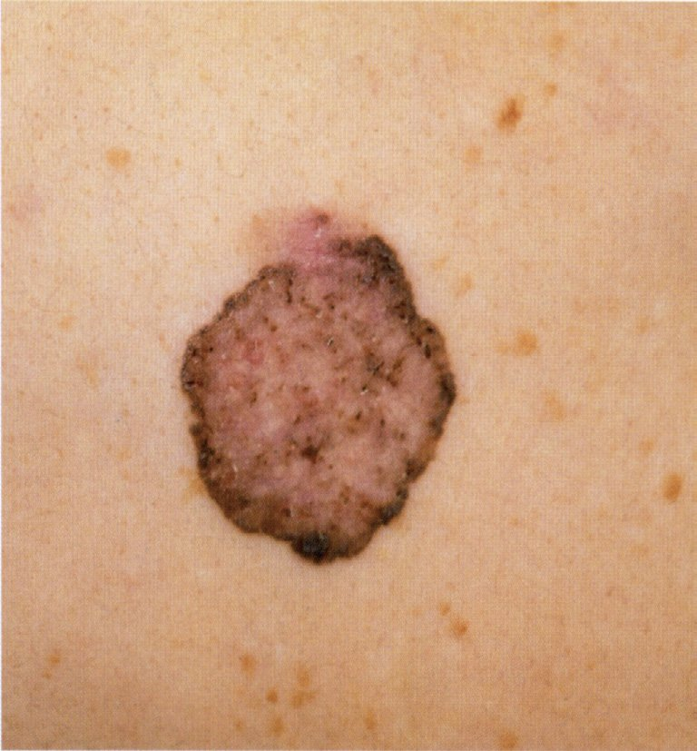
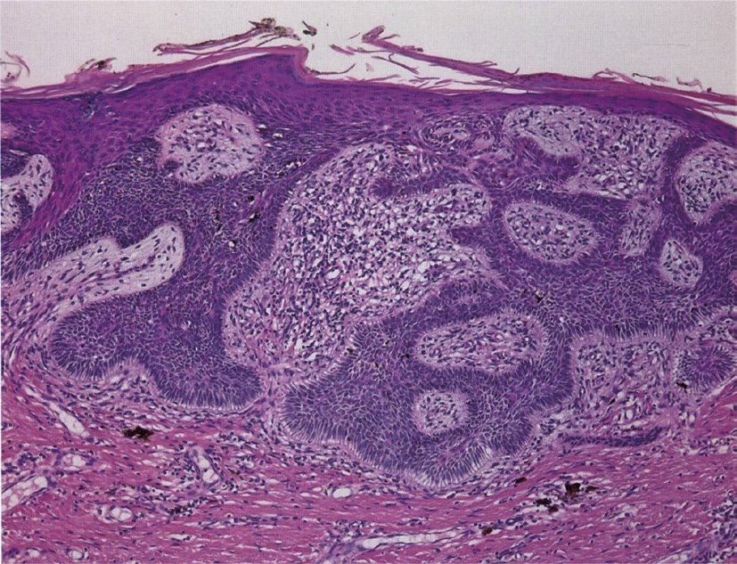
| 選択肢 | 解説 |
|---|---|
| ａ 拡大切除 | 拡大切除（追加切除）が必要になるのは、断端陽性の場合、または悪性黒色腫のように腫瘍厚に応じた規定マージンが定められている場合である。本例は5mmマージンで断端陰性が確認された基底細胞癌であり、追加切除は過剰治療となる。 |
| ◯ ｂ 経過観察 | 病理像は、表皮から連続する好塩基性の腫瘍胞巣が真皮内に増殖し、胞巣辺縁で核が柵状に配列〈palisading〉、周囲間質との間に裂隙〈retraction artifact〉を認める基底細胞癌の像である。基底細胞癌は遠隔転移がほぼなく、3〜5mmのマージンで切除し断端陰性であれば治癒が期待できる。追加治療は不要で、局所再発と新規病変の監視のために定期的な経過観察を行うのが標準である。 |
| ｃ 電子線照射 | 放射線（電子線）照射は、手術が困難な部位・高齢や合併症で手術に耐えない症例・切除後に断端陽性で追加切除が難しい症例で選択される。断端陰性で完全切除された症例に予防照射を行う意義はなく、晩期の放射線皮膚炎から二次癌のリスクを増やすだけである。 |
| ｄ PUVA療法 | PUVA療法はソラレン＋長波長紫外線による光線療法で、乾癬・尋常性白斑・菌状息肉症（早期）・掌蹠膿疱症などに用いる。紫外線は基底細胞癌の発症要因そのものであり、術後に照射するのは有害無益である。 |
| ｅ 薬物による抗癌治療 | 全身化学療法や分子標的薬（ヘッジホッグ経路阻害薬ビスモデギブ等）が対象となるのは、切除不能な局所進行例・転移例という極めて限られた状況のみ。完全切除された基底細胞癌に術後補助化学療法を行う根拠はない。 |
| 腫瘍 | 標準マージン | 断端陰性後の対応 |
|---|---|---|
| 基底細胞癌 | 3〜5mm（高リスク型はより広く） | 経過観察（転移監視は不要） |
| 有棘細胞癌 | 4〜10mm（低リスク）／10mm以上（高リスク） | 所属リンパ節の触診・エコーで転移監視 |
| 悪性黒色腫 | 腫瘍厚で決まる：in situ 5mm／≤1mm 1cm／1〜2mm 1〜2cm／＞2mm 2cm | 厚さ≧0.8mm等でセンチネルリンパ節生検 |
| 日光角化症・Bowen病（表皮内癌） | 数mm（凍結・イミキモド等も可） | 経過観察 |
| 乳房外Paget病 | 1〜3cm＋マッピング生検（境界を越えて進展するため） | 再発監視 |
| 選択肢 | 解説 |
|---|---|
| ａ Sweet病 | Sweet病〈急性熱性好中球性皮膚症〉はデルマドロームである。発熱・有痛性の浮腫性紅色局面（顔面・頸部・上肢）・末梢血好中球増多・病理で真皮上層の稠密な好中球浸潤（血管炎は伴わない）が特徴で、約2割に血液悪性腫瘍（とくに骨髄異形成症候群・急性骨髄性白血病）を合併する。ステロイド全身投与が著効する。 |
| ｂ 皮膚筋炎 | 皮膚筋炎はデルマドロームの代表格である。ヘリオトロープ疹・Gottron徴候・V徴候・ショール徴候と近位筋優位の筋力低下を示し、40歳以上の成人発症例では約2〜3割に悪性腫瘍（卵巣癌・胃癌・肺癌・大腸癌など）を合併する。診断時に悪性腫瘍のスクリーニングが必須で、とくに抗TIF1-γ抗体陽性例で合併率が高い。 |
| ｃ 黒色表皮腫 | 黒色表皮腫はデルマドロームの筆頭。中高年で急速に出現し、範囲が広く粘膜にも及ぶ悪性型は胃癌をはじめとする腺癌を強く示唆する（Q.153・Q.186）。 |
| ◯ ｄ 日光角化症 | 日光角化症〈光線角化症〉は、長年の紫外線曝露により露光部の表皮角化細胞に生じる表皮内癌（前癌病変）であり、「皮膚そのものの腫瘍」であって内臓悪性腫瘍とは無関係である。デルマドロームは内臓悪性腫瘍に随伴して出現する皮膚病変を指すため、定義上あてはまらない。 |
| ｅ 壊疽性膿皮症 | 壊疽性膿皮症もデルマドロームに含まれる。急速に拡大し、辺縁が穿掘性・堤防状で紫紅色を呈する有痛性潰瘍で、潰瘍性大腸炎・Crohn病、関節リウマチ、骨髄増殖性疾患・単クローン性γグロブリン血症（IgA型）を合併する。軽微な外傷で新病変が生じるpathergy現象のためデブリドマンは禁忌に近い。 |
| 関係 | 内容 | 例 |
|---|---|---|
| デルマドローム（傍腫瘍症候群） | 遠隔効果として生じる皮膚病変 | 黒色表皮腫、Leser-Trélat徴候、皮膚筋炎、Sweet病、壊疽性膿皮症、後天性魚鱗癬、Bazex症候群 |
| 皮膚転移・直接浸潤 | 腫瘍細胞そのものが皮膚に存在 | Sister Mary Joseph結節（臍転移）、炎症性乳癌、皮膚白血病 |
| 皮膚原発の悪性腫瘍・前癌病変 | 皮膚そのものの腫瘍 | 日光角化症、Bowen病、有棘細胞癌、基底細胞癌、悪性黒色腫 |
| （参考）遺伝性腫瘍症候群の皮膚所見 | 同じ遺伝子異常が皮膚と内臓に発現 | Cowden病（外毛根鞘腫＋乳癌・甲状腺癌）、Muir-Torre症候群（脂腺腫瘍＋大腸癌）、Peutz-Jeghers症候群（口唇色素斑＋消化管過誤腫） |
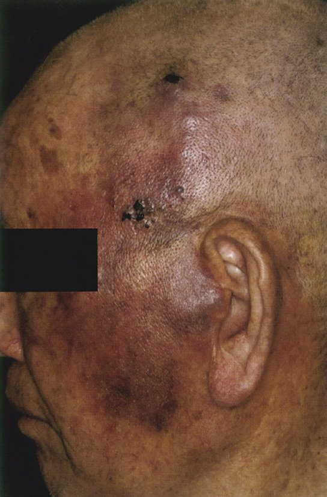
| 選択肢 | 解説 |
|---|---|
| ◯ ａ 血管肉腫 | ①高齢者、②頭部・顔面という好発部位、③打撲などの契機なく出現した紫紅色斑（＝一見「あざ」に見える）、④3か月で拡大・隆起・易出血化、⑤鱗屑がない（表皮病変ではなく真皮の血管病変）、⑥所属リンパ節を触知——頭部血管肉腫〈angiosarcoma〉の典型像である。「高齢者の頭部にできた、治らない・広がる打撲痕様の紫斑」は国試での定型的な提示で、早期から肺転移を来し極めて予後不良である（Q.176・Q.178・Q.187）。 |
| ｂ 有棘細胞癌 | 有棘細胞癌は角化を伴う紅色の腫瘤で、表面に鱗屑・痂皮・角栓を伴い、進行すると悪臭のある潰瘍を作る。本例は鱗屑がなく紫紅色（血管性）の色調で合致しない。また多くは日光角化症・熱傷瘢痕などの前駆病変や慢性刺激の既往を伴う。 |
| ｃ 老人性紫斑 | 老人性紫斑〈senile purpura〉は、加齢による真皮結合織の脆弱化で前腕伸側・手背に生じる境界明瞭な暗紫色斑で、平坦で隆起せず、1〜2週で自然に消退する。3か月かけて拡大・隆起し出血するようになる経過は紫斑ではない。 |
| ｄ 血管拡張性肉芽腫 | 血管拡張性肉芽腫〈毛細血管拡張性肉芽腫・化膿性肉芽腫〉は、外傷を契機に手指・口唇などに生じる有茎性の鮮紅色小結節で、数週で急速に大きくなるが通常1〜2cm程度で頭打ちになり、易出血性だが良性である。リンパ節腫大は来さず、広範な浸潤性の紫紅色局面にもならない。 |
| ｅ 抗凝固薬の内服による紫斑 | 抗凝固薬による紫斑は、打撲部位に一致して出現し、平坦で、時間とともに色調が変化して消退する。「隆起する」「拡大し続ける」「リンパ節を触知する」ことはない。本例で服薬歴は紫斑と誤認させて診断を遅らせるための撹乱因子であり、実際にこの誤認が頭部血管肉腫の発見を遅らせる最大の要因になっている。 |
| 疾患 | 経過 | 鍵 |
|---|---|---|
| 血管肉腫 | 数か月で拡大・隆起・出血 | 高齢者の頭部。鱗屑なし。リンパ節腫大。肺転移 |
| 老人性紫斑 | 1〜2週で自然消退 | 前腕伸側・手背。平坦 |
| 薬剤（抗凝固薬）による紫斑 | 打撲部位に一致し消退 | 平坦・隆起しない |
| 血管拡張性肉芽腫 | 数週で急速増大するが自己限定的 | 外傷契機・有茎性・鮮紅色・小型 |
| Kaposi肉腫 | 緩徐（古典型）／急速（AIDS関連型） | HHV-8。下腿（古典型）／HIV感染。多発性 |
| 巨細胞性動脈炎 | 数週の頭痛・顎跛行 | 拍動を触れる索状の側頭動脈・赤沈亢進・視力障害 |
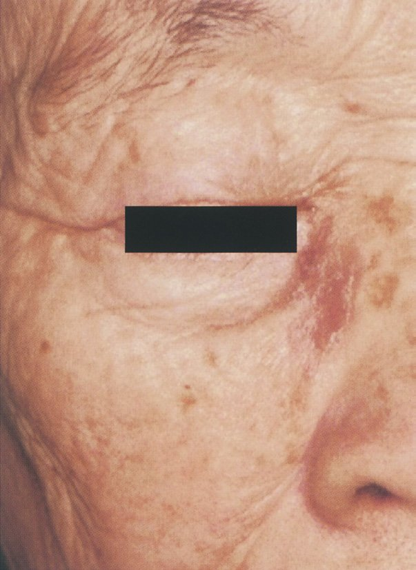
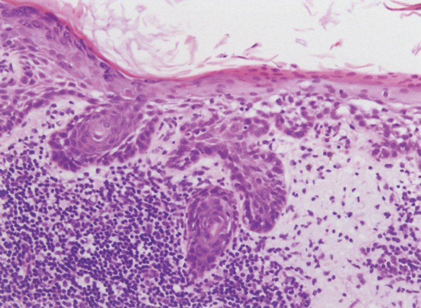
| 選択肢 | 解説 |
|---|---|
| ａ 角質層 | 角質層は核を失った角化細胞（角質細胞）の層であり、「増殖する細胞」は存在しない。日光角化症では錯角化〈parakeratosis：核が残った角化〉と正角化が交互に並ぶため角質層にも異常は及ぶが、異型細胞が増殖する場ではない。 |
| ｂ 透明層 | 透明層〈淡明層〉は手掌・足底にのみ存在する層で、顔面の表皮には存在しない。したがって本例では選択肢として成立しない。 |
| ｃ 顆粒層 | 顆粒層はケラトヒアリン顆粒をもつ終末分化過程の細胞層で、増殖能はほぼ失われている。日光角化症では顆粒層はしばしば減少・消失するが、異型細胞が増殖する起点ではない。 |
| ｄ 有棘層 | 有棘層は基底層から押し上げられた細胞が分化しながら重層する層である。病変が進行すれば異型細胞は有棘層へも広がるが、日光角化症の定義的な所見は「表皮下層（基底層側）に限局した異型」であり、表皮全層に異型が及べばそれはBowen病（表皮内癌の全層型）と呼ばれる段階になる。 |
| ◯ ｅ 基底層 | 日光角化症〈光線角化症〉では、紫外線でDNA損傷を受けた表皮の幹細胞由来の角化細胞が基底層（表皮下層）を中心に異型を示して増殖する。病理では、基底層側の核腫大・核濃染・極性の乱れ、錯角化と正角化の交互配列、真皮上層の日光弾性線維症〈solar elastosis〉を認める。「異型が表皮下1/3に留まる＝日光角化症、全層に及ぶ＝Bowen病、基底膜を破って真皮へ出る＝有棘細胞癌」という連続した段階のいちばん手前が本症である。 |
| 段階 | 異型の範囲 | 臨床 | 転移 |
|---|---|---|---|
| 日光角化症 | 表皮下層（基底層側）に限局 | 露光部の紅色・鱗屑を伴う平坦な斑。多発 | なし |
| Bowen病 | 表皮全層（full thickness）。基底膜は保たれる | 境界明瞭な不整形の紅褐色局面。非露光部にも生じる | なし |
| 有棘細胞癌 | 基底膜を破って真皮へ浸潤 | 角化を伴う結節・潰瘍。易出血・悪臭 | あり（リンパ行性） |
| 選択肢 | 解説 |
|---|---|
| ａ 肝細胞癌 | ヒ素は肝血管肉腫との関連が指摘されるが、肝「細胞」癌の主因はB型・C型肝炎ウイルス、アルコール、非アルコール性脂肪肝炎である。なお肝血管肉腫の職業性発癌物質としては塩化ビニルモノマー・トロトラスト・ヒ素が挙げられ、この文脈でヒ素が登場することはあるが、選択肢としてはｃが優先される。 |
| ｂ 骨粗鬆症 | 骨粗鬆症を来す中毒・薬剤として代表的なのはステロイド長期投与である。重金属中毒でカドミウム（イタイイタイ病）が骨軟化症・腎尿細管障害を来すのと混同しやすいが、ヒ素中毒の標的は皮膚・末梢神経・血管である。 |
| ◯ ｃ Bowen病 | 慢性ヒ素中毒では、①手掌・足底の点状の角化性丘疹〈ヒ素角化症〉、②雨滴状〈rain-drop〉の色素沈着と脱色素斑の混在、③多発性のBowen病、④有棘細胞癌、⑤基底細胞癌を来す。とくに「非露光部（体幹）に多発するBowen病」は慢性ヒ素曝露を強く示唆するのが国試の定番である（Q.183・Q.189）。皮膚以外では肺癌・膀胱癌のリスクも上昇する。 |
| ｄ 慢性気管支炎 | 慢性気管支炎の主因は喫煙・大気汚染である。ヒ素は吸入曝露で肺癌のリスクを上げるが、慢性気管支炎を特徴的に来す中毒ではない。 |
| ｅ 再生不良性貧血 | 再生不良性貧血を来す化学物質としてはベンゼン・クロラムフェニコール・抗腫瘍薬が代表である。急性ヒ素中毒では骨髄抑制・汎血球減少を来しうるが、慢性ヒ素中毒の典型像として問われるのは皮膚病変である。なお三酸化ヒ素は急性前骨髄球性白血病の治療薬でもある。 |
| 背景 | 特徴 |
|---|---|
| 紫外線 | 露光部（顔面・手背）に単発〜数個 |
| 慢性ヒ素中毒 | 非露光部（体幹）に多発。手掌足底の点状角化・雨滴状色素沈着を伴う |
| ヒトパピローマウイルス〈HPV〉 | HPV16など。外陰部・肛囲・指（Bowen様丘疹症も同系統） |
| 免疫抑制 | 臓器移植後・免疫抑制薬長期使用 |
| 放射線 | 慢性放射性皮膚炎の部位に発生（Q.169） |
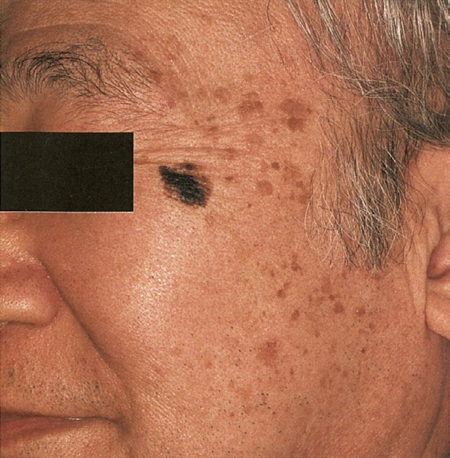
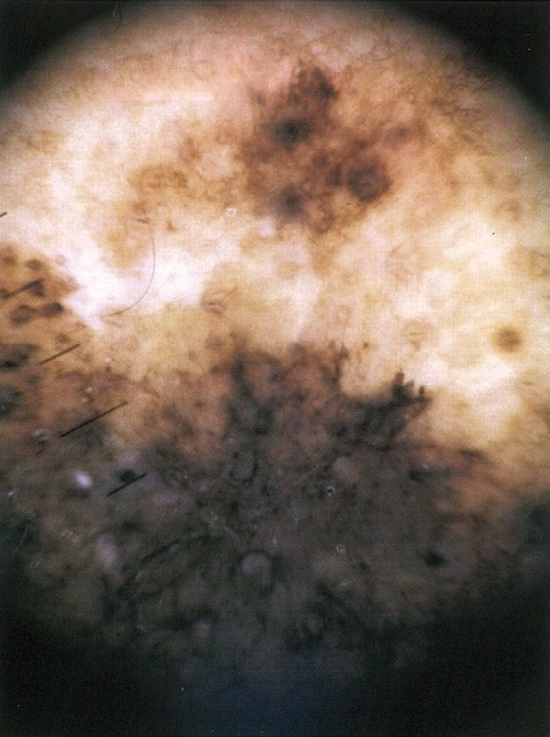
| 選択肢 | 解説 |
|---|---|
| ａ 放射線治療が有効である。 | 悪性黒色腫は放射線感受性が低いのが古典的な認識で、根治治療は外科的切除である。放射線は切除不能例・骨転移や脳転移の緩和目的・術後の局所制御の補助として限定的に用いられるにすぎない。 |
| ｂ 液体窒素療法が有効である。 | 凍結（液体窒素）療法は尋常性疣贅・日光角化症・脂漏性角化症など、組織診断が不要か、または表在性で転移しない病変に用いる治療である。悪性黒色腫に凍結療法を行うと、病理標本が得られず腫瘍厚（＝病期・予後）が評価できないうえ、残存腫瘍を刺激して進展させる危険があるため禁忌に等しい。 |
| ◯ ｃ 病変の深達度が予後に影響する。 | 悪性黒色腫の予後を最も強く規定するのは腫瘍の厚さ〈Breslow thickness：顆粒層から腫瘍最深部までのmm〉である。TNM分類のpTはこの腫瘍厚と潰瘍の有無で決まり、センチネルリンパ節生検の適応や切除マージンもここから決まる。「深さ＝予後」という一点が悪性黒色腫の最重要事項である（Q.180）。 |
| ｄ ヒトパピローマウイルス〈HPV〉が発症に関与する。 | HPVが関与するのは、尋常性疣贅・尖圭コンジローマ、子宮頸癌、Bowen様丘疹症、疣贅状表皮発育異常症からの有棘細胞癌などである。悪性黒色腫の発症にHPVは関与しない。本例は高齢者の顔面に長く存在した色素斑（悪性黒子）から生じた悪性黒子型黒色腫と考えられ、背景因子は累積紫外線量である。 |
| ｅ センチネルリンパ節生検が診断のために必要である。 | センチネルリンパ節生検は「診断」のための検査ではない。原発巣の病理診断（切除生検）で悪性黒色腫と確定し、腫瘍厚が判明した後に、リンパ節郭清の適応を決める＝病期診断のために行うものである。順序を逆にしない（Q.180）。 |
| 内容 | 理由 | |
|---|---|---|
| 避ける | 凍結療法・レーザー・電気焼灼・薬剤での「焼く」治療 | 組織が得られず腫瘍厚を評価できない。残存病変を刺激する |
| 原則避ける | 部分生検・パンチ生検 | 最深部を外すと病期を過小評価する（巨大病変等では已むを得ず行う） |
| 行う | ダーモスコピー→全切除生検（狭いマージンで一括切除） | 腫瘍厚を正確に測るため |
| 行う | 厚さに応じた追加拡大切除＋センチネルリンパ節生検 | 局所制御と病期診断（郭清の適応判断） |
| 選択肢 | 解説 |
|---|---|
| ａ 硝子圧法 | 硝子圧法〈diascopy〉は、ガラス板やスライドグラスで皮疹を圧迫して退色するかをみる方法。退色すれば紅斑（血管拡張）、退色しなければ紫斑（血管外への出血）や色素沈着と判定する。サルコイドーシスや尋常性狼瘡で黄褐色の「リンゴゼリー様」を確認するのが代表的な用途で、色素性病変の良悪の鑑別には使えない。 |
| ｂ 皮膚描記法 | 皮膚描記法〈dermographism〉は、皮膚を鈍的にこすって膨疹が出るかをみる検査で、機械性蕁麻疹（人工蕁麻疹）や肥満細胞症のDarier徴候の確認に用いる。色素性病変の評価とは無関係である。 |
| ｃ パッチテスト | パッチテスト〈貼布試験〉は、疑わしい物質を背部などに48時間貼付し、Ⅳ型（遅延型）アレルギーの原因物質を同定する検査である。アレルギー性接触皮膚炎・金属アレルギーの原因検索に用いる。 |
| ｄ プリックテスト | プリックテストは、抗原液を滴下した皮膚を専用の針で浅く刺し、15〜20分後の膨疹・紅斑をみるⅠ型（即時型）アレルギーの検査である。食物アレルギー・花粉症・ラテックスアレルギーなどが対象で、腫瘍の鑑別には用いない。 |
| ◯ ｅ ダーモスコピー試験 | ダーモスコピーは、エコーゼリーや偏光を用いて角層の乱反射を消し、10〜30倍で表皮〜真皮浅層の色素分布を非侵襲的に観察する検査である。色素性病変の良悪鑑別における第一選択のスクリーニング法で、悪性黒色腫の診断精度を肉眼所見のみの場合より大きく高めることが確立している。足底では「平行溝パターン＝良性／平行隆線パターン＝悪性」という明快な指標がある（Q.188）。 |
| 検査 | 見るもの | 主な対象疾患 |
|---|---|---|
| ダーモスコピー | 表皮〜真皮浅層の色素・血管パターン | 悪性黒色腫、母斑、基底細胞癌、脂漏性角化症、円形脱毛症 |
| 硝子圧法 | 退色するか（血管性か出血性か） | 紫斑と紅斑の鑑別、サルコイドーシス（リンゴゼリー様） |
| Wood灯 | 長波長紫外線での蛍光 | 白癬（黄緑）、紅色陰癬（サンゴ色）、尋常性白斑・結節性硬化症の葉状白斑の描出 |
| Tzanck試験 | 水疱底のスメアの細胞像 | ヘルペス（多核巨細胞）、天疱瘡（棘融解細胞） |
| KOH直接鏡検 | 菌糸・胞子 | 白癬・カンジダ・癜風 |
| パッチテスト | Ⅳ型アレルギー | アレルギー性接触皮膚炎 |
| プリック／皮内テスト | Ⅰ型アレルギー | 食物・薬剤・花粉 |
| 皮膚描記法 | 膨疹の誘発 | 機械性蕁麻疹、肥満細胞症 |
| 蛍光抗体直接法 | 皮膚に沈着した自己抗体 | 天疱瘡（細胞間）、類天疱瘡（表皮基底膜部の線状） |
| 選択肢 | 解説 |
|---|---|
| ａ 濾胞性リンパ腫 | 濾胞性リンパ腫はB細胞性の低悪性度リンパ腫で、t(14;18)によるBCL2の過剰発現が特徴。CD20陽性で、リツキシマブを含む治療が行われる。 |
| ｂ Burkittリンパ腫 | Burkittリンパ腫もB細胞性で、t(8;14)によるMYC転座、病理の"starry sky"（星空像）、極めて速い増殖（腫瘍崩壊症候群に注意）が特徴。アフリカ型はEBウイルスと関連する。 |
| ｃ MALTリンパ腫 | MALTリンパ腫は粘膜関連リンパ組織由来のB細胞性で、胃MALTリンパ腫はHelicobacter pylori感染と関連し、除菌で寛解することが国試頻出。甲状腺（橋本病）・唾液腺（Sjögren症候群）にも生じる。 |
| ｄ hairy cell leukemia〈有毛細胞白血病〉 | 有毛細胞白血病はB細胞性の慢性白血病で、細胞質に毛髪様の突起をもつ細胞、酒石酸抵抗性酸ホスファターゼ〈TRAP〉陽性、脾腫、汎血球減少、骨髄線維化による dry tapが特徴。BRAF V600E変異を高率に有する。 |
| ◯ ｅ 菌状息肉症 | 菌状息肉症は皮膚原発のT細胞リンパ腫〈CTCL〉で、成熟したCD3陽性・CD4陽性・CD8陰性のヘルパーT細胞が皮膚に生着して増殖する。CD7の脱落、T細胞受容体遺伝子再構成のクローナリティが診断の補助となる。紅斑期→扁平浸潤期→腫瘍期と年単位で進む（Q.151・Q.171）。 |
| 疾患 | 系列 | キーワード |
|---|---|---|
| 菌状息肉症／Sézary症候群 | T（CD4陽性） | 皮膚原発。表皮向性・Pautrier微小膿瘍 |
| 成人T細胞白血病リンパ腫 | T（CD4陽性） | HTLV-1、九州沖縄、flower cell、高Ca血症 |
| 濾胞性リンパ腫 | B | t(14;18)／BCL2、低悪性度 |
| Burkittリンパ腫 | B | t(8;14)／MYC、starry sky、EBV |
| MALTリンパ腫 | B | H. pylori 除菌で寛解 |
| 有毛細胞白血病 | B | TRAP陽性、脾腫、dry tap |
| NK/T細胞リンパ腫・鼻型 | NK/T | EBV、鼻中隔穿孔・正中線破壊 |
| 選択肢 | 解説 |
|---|---|
| ａ 乳房外Paget 病 ―――――――― Bowen 病 | 乳房外Paget病はアポクリン腺に関連した表皮内腺癌で、外陰部・肛囲・腋窩に「原発」する。Bowen病（表皮内の有棘細胞癌）から発生することはない——両者は腺系と扁平上皮系という別系統の腫瘍である。 |
| ◯ ｂ 有棘細胞癌 ―――――――――― 熱傷瘢痕 | 正しい。熱傷瘢痕・慢性潰瘍・瘻孔など、長期にわたり炎症と再生を繰り返す瘢痕組織から発生する有棘細胞癌をMarjolin潰瘍〈Marjolin ulcer〉と呼ぶ。受傷から数十年（20〜50年）の潜伏期を経て、瘢痕の一部が潰瘍化・易出血化・悪臭を伴う腫瘤となって発症する（Q.185）。通常の有棘細胞癌より転移率が高いとされる。 |
| ｃ 悪性黒色腫 ―――――――――― 黒色表皮腫 | 黒色表皮腫は角化細胞の乳頭腫症・角質増殖であってメラノサイトの増殖ではない。前癌病変でもなく、悪性黒色腫の発生母地にはならない。悪性黒色腫の発生母地となりうるのは、先天性巨大色素性母斑・悪性黒子・異形成母斑である（Q.169）。 |
| ｄ 血管肉腫 ――――――――――― 血管拡張性肉芽腫 | 血管拡張性肉芽腫は外傷を契機に生じる良性の血管増殖で、悪性化しない。血管肉腫の背景として押さえるべきは、①高齢者の頭部（特発性）、②慢性リンパ浮腫〈Stewart-Treves症候群〉、③放射線照射後である（Q.159）。 |
| ｅ 菌状息肉症 ―――――――――― 体白癬 | 「菌状」「息肉」という名は、腫瘍期の結節がキノコ（菌）状に隆起する外観に由来するもので、真菌感染とは何の関係もない。体白癬から菌状息肉症が発生することはない。むしろ紅斑期の菌状息肉症が体部白癬と誤診されることが臨床的な問題になる。 |
| 腫瘍 | 発生母地・素地 |
|---|---|
| 有棘細胞癌 | 日光角化症、Bowen病、熱傷瘢痕（Marjolin潰瘍）、慢性放射性皮膚炎、慢性潰瘍・瘻孔、色素性乾皮症、HPV感染 |
| 悪性黒色腫 | 先天性巨大色素性母斑、悪性黒子、異形成母斑、色素性乾皮症 |
| 基底細胞癌 | 脂腺母斑、慢性放射性皮膚炎、Gorlin症候群 |
| 血管肉腫 | 高齢者頭部（特発性）、慢性リンパ浮腫（Stewart-Treves）、放射線照射後 |
| Merkel細胞癌 | 高齢者の露光部。Merkel細胞ポリオーマウイルス、免疫抑制 |
| 乳房外Paget病 | 原発（前駆病変を持たない） |
| 菌状息肉症 | 原発。感染や湿疹から発生するわけではない |
| 選択肢 | 解説 |
|---|---|
| ａ 大きさ | ABCDE基準の D＝Diameter。径6mmを超えるものは悪性黒色腫を疑う。ただし早期病変では6mm以下のこともあるため、単独では決め手にならない補助的指標である。 |
| ｂ 辺縁の性状 | ABCDE基準の B＝Border irregularity。辺縁が不整でギザギザ、周囲へ滲み出すようにぼやけるのは悪性を示唆する。良性の母斑は辺縁が滑らかで境界明瞭である。 |
| ◯ ｃ 黒色調の強さ | 「黒さの程度」そのものは診断指標ではない。濃く真っ黒でも均一で対称なら良性（色素性母斑）のことが多く、逆に淡くても色調にむらがあれば悪性を疑う。ABCDE基準で問われるのは「色調の不均一さ（variegation）」であって「濃さ」ではない——この区別が本問の核心である。無色素性黒色腫〈amelanotic melanoma〉のように黒くない黒色腫すら存在する。 |
| ｄ 形状の対称性 | ABCDE基準の A＝Asymmetry。病変の中心を通る線で二分したときに形・色が左右で一致しない（非対称）のは悪性を示唆する。 |
| ｅ 色調の均一性 | ABCDE基準の C＝Color variegation。褐色・黒色・青灰色・赤色・白色（退縮部）が混在する＝色調が不均一であれば悪性を疑う。これは「濃さ」ではなく「ばらつき」の指標であり、ｃとの違いを明確に区別すること。 |
| 項目 | 色素性母斑（良性） | 悪性黒色腫 |
|---|---|---|
| 対称性 | 対称 | 非対称 |
| 辺縁 | 滑らか・明瞭 | 不整・不明瞭 |
| 色調 | 均一（濃くてもよい） | 多彩・まだら（黒・褐・青灰・赤・白） |
| 径 | 通常6mm以下 | 6mm超が多い |
| 経過 | 身体の成長に伴い緩徐 | 数か月で拡大・隆起・出血 |
| 足底ダーモスコピー | 平行溝パターン | 平行隆線パターン |
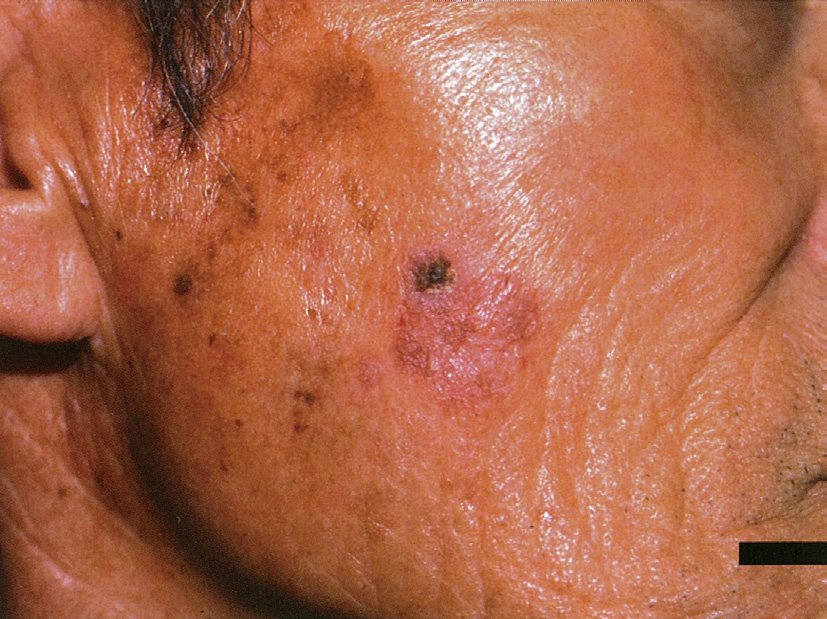
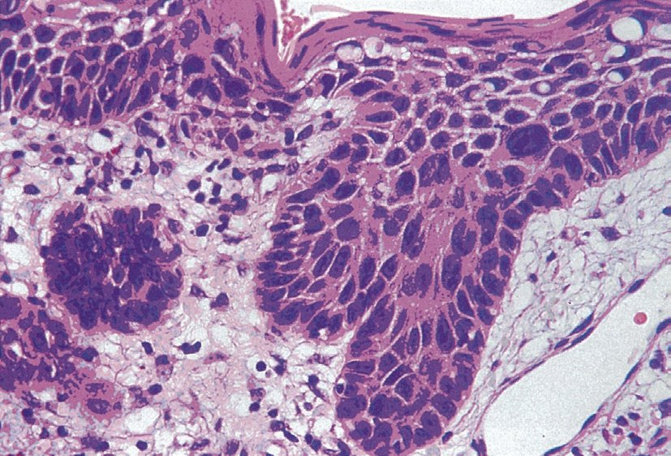
| 選択肢 | 解説 |
|---|---|
| ◯ ａ 切 除 | 外科的切除は日光角化症の確実な治療である。病変全体を病理検査に回せるため、有棘細胞癌への浸潤の有無を確認できるという点で診断と治療を兼ねる。単発・肥厚した病変・浸潤が疑われる病変では第一選択となる。 |
| ◯ ｂ 凍結療法 | 液体窒素による凍結療法は日光角化症の標準治療の一つで、簡便・低コストで外来で完結し、多発病変にも対応できる。異型角化細胞は凍結に対する抵抗性が低く、数回の施行で治癒が得られる。ただし組織が得られないため、浸潤癌が否定できない病変ではまず生検を行うのが原則である。 |
| ｃ 温熱療法 | 温熱療法は皮膚悪性腫瘍の標準治療ではない。深部の軟部肉腫などで放射線・化学療法の増感を狙って併用されることはあるが、表在性の表皮内癌に単独で行う治療としての位置づけはない。 |
| ｄ 放射線治療 | 放射線治療は、手術が困難な部位や全身状態から手術に耐えない高齢者で選択されうるが、日光角化症のような表在性の前癌病変に第一選択として用いるのは過剰である。照射部位が後に慢性放射性皮膚炎となり、二次的に有棘細胞癌・基底細胞癌を生じるリスクもある。 |
| ｅ 紫外線療法 | 紫外線こそが日光角化症の原因である。PUVAやnarrow-band UVBを照射すればDNA損傷をさらに蓄積させ、病変を悪化させ新たな病変を誘発する。むしろ治療の一環として遮光指導を行うのが正しい。光線力学的療法〈PDT〉は「光感受性物質＋可視光」で腫瘍細胞を選択的に破壊する別の治療であり、単なる紫外線照射とは区別する。 |
| 疾患 | 理由 | |
|---|---|---|
| 光線療法が有効 | 尋常性乾癬、尋常性白斑、菌状息肉症（早期）、アトピー性皮膚炎（難治例）、掌蹠膿疱症、円形脱毛症 | T細胞のアポトーシス誘導・免疫調節・色素再生 |
| 紫外線が禁忌／有害 | 日光角化症、Bowen病、有棘細胞癌、基底細胞癌、悪性黒色腫、色素性乾皮症、全身性エリテマトーデス、ポルフィリン症 | 紫外線が発症要因そのもの／光線過敏を悪化させる |
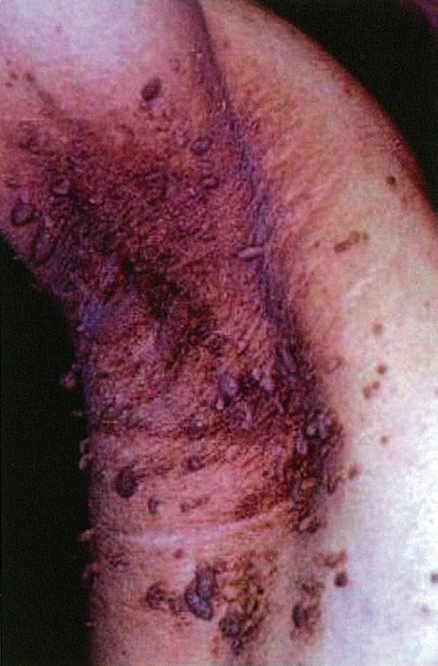
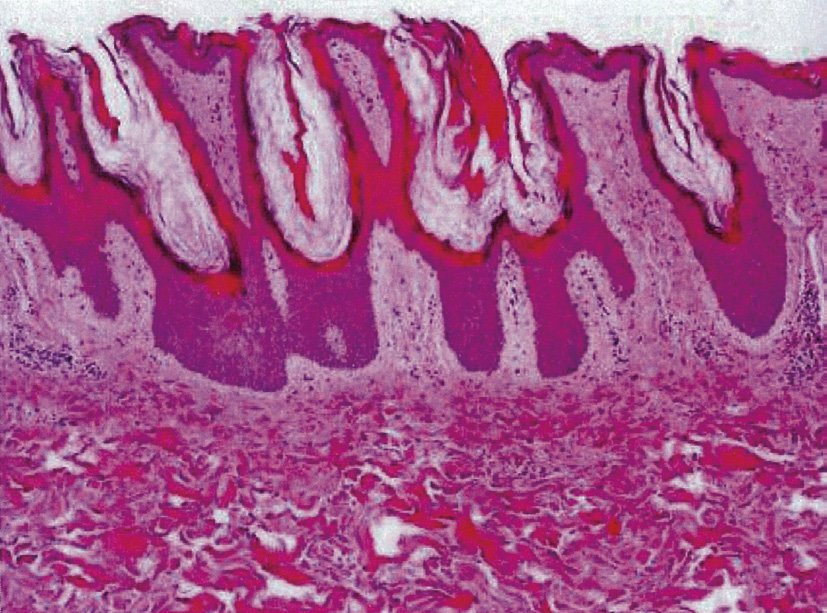
| 選択肢 | 解説 |
|---|---|
| ａ 肝硬変 | 肝硬変の皮膚所見は、クモ状血管腫・手掌紅斑・女性化乳房・黄疸・腹壁静脈怒張（medusa頭）・出血傾向（紫斑）・爪の白色化である。間擦部のざらついた色素沈着は来さない。 |
| ◯ ｂ 糖尿病 | 黒色表皮腫の良性型（＝仮性黒色表皮腫）の最も多い背景がインスリン抵抗性を伴う肥満・2型糖尿病である。高インスリン血症のインスリンがIGF-1受容体に交差結合して角化細胞・線維芽細胞の増殖を促すのが機序で、黒色表皮腫はインスリン抵抗性の「見える指標」として扱われる。 |
| ◯ ｃ 悪性腫瘍 | 黒色表皮腫は代表的なデルマドロームで、悪性型は中高年に急速に発症し、範囲が広く、口唇・口腔粘膜や手掌（tripe palms）にも及び、瘙痒を伴う。合併腫瘍の約6割は胃癌で、他に膵・肺・大腸・卵巣などの腺癌がある（Q.153・Q.186）。54歳で痒みを伴い頸部にも及ぶ本例では、上部消化管内視鏡による検索が必要である。 |
| ｄ 悪性貧血 | 悪性貧血は抗内因子抗体・抗胃壁細胞抗体によるビタミンB12欠乏で、Hunter舌炎（舌乳頭の萎縮）、亜急性連合性脊髄変性症、皮膚の蒼白・軽度の黄疸、白髪を来す。黒色表皮腫の背景疾患ではない。なお悪性貧血の背景である萎縮性胃炎は胃癌のリスクではあるが、設問が問うているのは黒色表皮腫の基礎疾患である。 |
| ｅ Basedow病 | Basedow病の皮膚所見は、発汗過多・温かく湿った皮膚・脛骨前粘液水腫（前脛骨部の非圧痕性浮腫状局面）・ばち指〈thyroid acropachy〉である。黒色表皮腫を来す内分泌疾患としては、Cushing症候群・先端巨大症・多囊胞性卵巣症候群などインスリン抵抗性を伴うものが挙げられ、Basedow病はこれに含まれない。 |
| 項目 | 良性型（インスリン抵抗性） | 悪性型（腫瘍随伴） |
|---|---|---|
| 年齢 | 若年〜中年 | 中高年 |
| 発症 | 緩徐（年単位） | 急速（数か月） |
| 範囲 | 腋窩・頸部に限局 | 広範。口唇・口腔粘膜・手掌（tripe palms）にも及ぶ |
| 瘙痒 | 乏しい | あり |
| 背景 | 肥満、2型糖尿病、PCOS、Cushing症候群、先端巨大症 | 胃癌（約6割）、その他の腺癌 |
| 対応 | 減量・血糖管理 | 上部消化管内視鏡を含む腫瘍検索 |
| 選択肢 | 解説 |
|---|---|
| ａ Merkel 細胞癌 ――――――――― 局面状類乾癬 | Merkel細胞癌は高齢者の露光部（頭頸部・四肢）に生じる神経内分泌腫瘍で、Merkel細胞ポリオーマウイルス感染と免疫抑制が背景である。局面状類乾癬〈parapsoriasis en plaques〉は菌状息肉症の前駆病変（とくに大局面型）であり、Merkel細胞癌とは無関係である。 |
| ◯ ｂ 有棘細胞癌 ―――――――――― 慢性放射性皮膚炎 | 正しい。慢性放射性皮膚炎は、放射線照射後に萎縮・色素異常・毛細血管拡張・難治性潰瘍を来した皮膚で、照射から10〜30年の潜伏期を経て有棘細胞癌・基底細胞癌が発生する。かつてX線技師や結核・白癬の放射線治療を受けた患者に多かった。慢性の細胞障害と再生の反復という点で熱傷瘢痕（Marjolin潰瘍）と同じ機序である。 |
| ◯ ｃ 悪性黒色腫 ―――――――――― 先天性巨大色素性母斑 | 正しい。先天性巨大色素性母斑（成人換算で径20cm以上）は、生涯にわたり数％程度の確率で悪性黒色腫を発生する。発生は小児期を含む早期にも起こりうるため経過観察・整容目的の治療が検討される。体幹の巨大病変では神経皮膚黒色症〈neurocutaneous melanosis〉を合併し中枢神経にもメラノサイト病変を伴うことがある。なお通常の小型の後天性色素性母斑からの悪性化はまれである。 |
| ｄ Paget 病 ――――――――――― 黒色表皮腫 | 黒色表皮腫は角化細胞の乳頭腫症であり前癌病変ではない。乳房外Paget病はアポクリン腺関連の表皮内腺癌として原発するもので、発生母地をもたない（Q.155）。 |
| ｅ 血管肉腫 ――――――――――― 尋常性狼瘡 | 尋常性狼瘡〈lupus vulgaris〉は皮膚結核の一型で、硝子圧法でリンゴゼリー様の黄褐色結節を示す。長期経過例では有棘細胞癌を生じうるが、血管肉腫の母地にはならない。血管肉腫の背景は高齢者頭部・慢性リンパ浮腫・放射線照射後である（Q.159）。 |
| 素地 | 潜伏期 | 備考 |
|---|---|---|
| 熱傷瘢痕（Marjolin潰瘍） | 20〜50年 | 転移率が高い |
| 慢性放射性皮膚炎 | 10〜30年 | 基底細胞癌も生じる |
| 慢性膿皮症・瘻孔・褥瘡 | 年単位 | 治らない潰瘍は生検 |
| 尋常性狼瘡（皮膚結核） | 数十年 | リンゴゼリー様結節 |
| 慢性円板状エリテマトーデス | 年単位 | 瘢痕性の萎縮局面 |
| 日光角化症・Bowen病 | — | 表皮内癌からの連続的進展 |
| 選択肢 | 解説 |
|---|---|
| ａ Bowen病は外陰部以外にみられない。 | Bowen病は全身どこにでも生じる。紫外線による露光部の病変、慢性ヒ素中毒による体幹（非露光部）の多発病変、HPV関連の外陰・肛囲病変と背景は多様である（Q.161）。「外陰部以外にみられない」は明らかな誤り。 |
| ◯ ｂ Paget病は術後再発しやすい。 | 正しい。乳房外Paget病は、肉眼的な病変の境界を越えて表皮内をpagetoidに進展しているため、見た目どおりに切除すると断端に腫瘍細胞が残り、高率に再発する。このため十分なマージン（1〜3cm）をとる、あるいは事前に病変周囲を格子状に生検して進展範囲を確認するマッピング生検を行ってから切除するのが標準である（Q.155）。 |
| ｃ 基底細胞癌が好発する。 | 基底細胞癌は顔面正中（鼻・内眼角）に好発し、約8割が頭頸部に生じる。外陰部の基底細胞癌は極めてまれである。外陰部に好発する悪性腫瘍は扁平上皮癌と乳房外Paget病。 |
| ｄ 扁平上皮癌の好発年齢は40歳代である。 | 外陰扁平上皮癌の好発年齢は60〜70歳代以降である。高齢者では硬化性苔癬などの慢性炎症を背景としたHPV非依存性、比較的若年ではHPV（16型など）関連の外陰上皮内腫瘍からの進展という2経路があるが、いずれにせよ40歳代が好発年齢ではない。 |
| ｅ 悪性黒色腫は腺上皮由来である。 | 悪性黒色腫は神経堤由来のメラノサイトから発生する。腺上皮由来ではない。外陰部の悪性黒色腫は粘膜型で、皮膚原発より進行例で発見されやすく予後不良である。免疫染色はS-100・HMB-45・Melan-A陽性。 |
| 疾患 | 特徴 |
|---|---|
| 乳房外Paget病 | 境界明瞭な紅色局面。白色調が混在。緩徐に拡大。高齢者 |
| 硬化性苔癬 | 白色の萎縮性局面。瘙痒。閉経後女性と小児。扁平上皮癌のリスク |
| 外陰カンジダ症 | 紅斑＋辺縁の膜様鱗屑と衛星病変。KOHで仮性菌糸 |
| 股部白癬 | 辺縁が堤防状に隆起し中心治癒傾向。陰囊は侵しにくい |
| 接触皮膚炎 | 接触部位に一致。急性の紅斑・小水疱 |
| 尖圭コンジローマ | HPV6/11。乳頭状・鶏冠状の丘疹 |
| 疥癬結節 | 陰囊・陰茎の瘙痒性紅色結節。夜間増悪 |
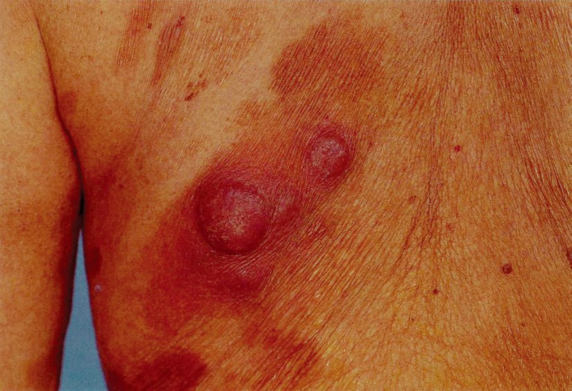
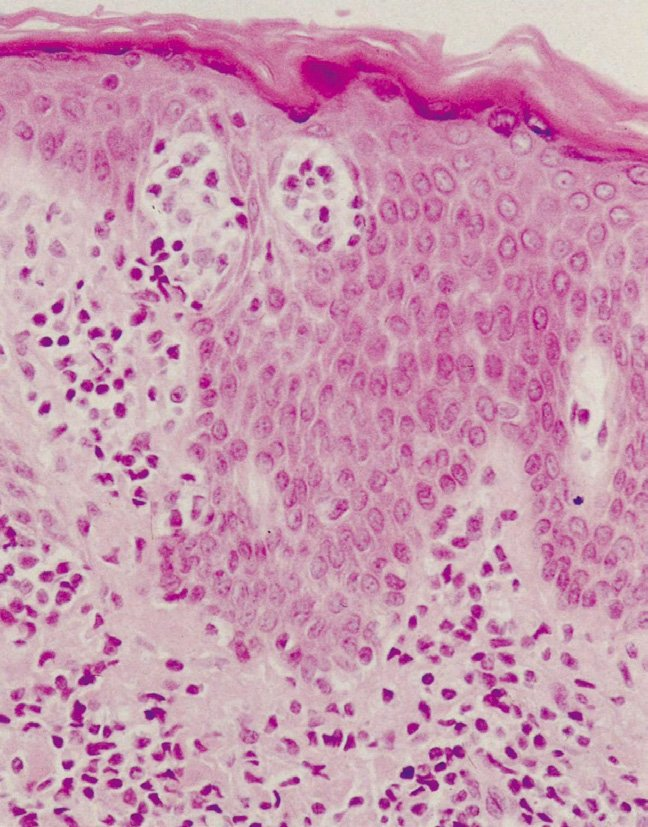
| 選択肢 | 解説 |
|---|---|
| ａ 貨幣状湿疹 | 貨幣状湿疹は、四肢（とくに下腿）に生じる硬貨大の境界明瞭な滲出性紅斑で、痂皮・鱗屑を伴い強い瘙痒がある。数週〜数か月で軽快と再燃を繰り返すが、20年かけて硬く浸潤し隆起・腫瘤化することはない。 |
| ｂ 乾 癬 | 尋常性乾癬は、被髪頭部・肘頭・膝蓋・殿部など刺激を受ける部位に生じる、銀白色の厚い鱗屑を伴う境界明瞭な紅色局面。Auspitz現象（鱗屑を剝がすと点状出血）とKöbner現象が特徴で、病理は錯角化・顆粒層の消失・Munro微小膿瘍（角層内の好中球）・表皮突起の棍棒状延長である。異型リンパ球の浸潤は来さない。 |
| ｃ 扁平苔癬 | 扁平苔癬は、手関節屈側・下腿に生じる紫紅色で多角形の扁平隆起性丘疹（Wickham線条を伴う）が特徴。病理は表皮基底層の液状変性と真皮上層の帯状リンパ球浸潤で、浸潤するリンパ球に異型はない。口腔粘膜のレース状白斑・C型肝炎との関連も押さえる。 |
| ◯ ｄ 皮膚T細胞リンパ腫 | ①20年という超長期の経過、②躯幹・四肢の非露光部に多発する斑、③次第に「硬く触れる」＝浸潤を触れる局面へ（扁平浸潤期）、④最近になって一部が隆起＝腫瘍期への移行、⑤瘙痒はあるが全身状態は良好——菌状息肉症＝皮膚T細胞リンパ腫〈CTCL〉の典型的な自然史である。病理では真皮上層の帯状リンパ球浸潤に加え、表皮内へ異型リンパ球が侵入する表皮向性とPautrier微小膿瘍を認める（Q.151・Q.164）。 |
| ｅ スポロトリコーシス | スポロトリコーシスは土壌中の Sporothrix による深在性真菌症で、外傷を契機に露出部（顔面・上肢）に単発の結節・潰瘍を生じ、リンパ管に沿って線状に新病変が並ぶ。20年かけて全身の躯幹・四肢に多発することはなく、病理は化膿性肉芽腫（好中球＋類上皮細胞）である。 |
| 疾患 | 経過 | 病理の要点 |
|---|---|---|
| 菌状息肉症 | 10〜20年、一方向に進行 | 表皮向性・Pautrier微小膿瘍・脳回状核 |
| 貨幣状湿疹 | 数週〜数か月、寛解増悪 | 海綿状態＋リンパ球浸潤（異型なし） |
| 尋常性乾癬 | 慢性だが形態は変わらない | 錯角化・顆粒層消失・Munro微小膿瘍・表皮突起の棍棒状延長 |
| 扁平苔癬 | 数か月〜年。自然消退あり | 基底層の液状変性＋帯状リンパ球浸潤 |
| 体部白癬 | 数週〜数か月。抗真菌薬で治る | 角層内に菌糸（PAS・Grocott染色） |
| 類乾癬（大局面型） | 年単位 | 菌状息肉症の前駆病変となりうる |
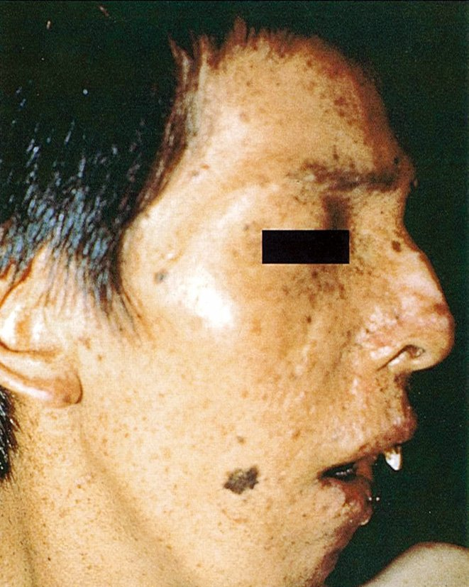
| 選択肢 | 解説 |
|---|---|
| ◯ ａ 常染色体優性遺伝 | 色素性乾皮症〈xeroderma pigmentosum: XP〉は常染色体潜性〈劣性〉遺伝である。紫外線で生じたDNA損傷（ピリミジンダイマー）を除去するヌクレオチド除去修復〈NER〉に関わる遺伝子（XPA〜XPGとバリアント型XPV）の両アレル変異で発症する。日本ではXPA群が最多で、両親が保因者（血族婚があると頻度が上がる）という典型的な潜性遺伝の家系像をとる。したがって「優性遺伝」は誤り。 |
| ｂ 光線過敏症 | みられる。乳児期に少量の日光曝露で強い日焼け（水疱を生じるほどの遷延する紅斑）を来し、これが最初の気付きになることが多い。その後、露光部に雀卵斑様色素斑が密に多発し、色素脱失・毛細血管拡張・皮膚萎縮が混在する「多形皮膚萎縮〈poikiloderma〉」を呈する。 |
| ｃ 皮膚の悪性腫瘍 | みられる。DNA修復ができないため、露光部に基底細胞癌・有棘細胞癌・悪性黒色腫が若年（多くは20歳未満）から多発する。健常人に比べ皮膚癌の発生率は千倍以上とされる。本例の「数年前から黒色丘疹が多発」はこの腫瘍発生を意味しており、徹底した遮光が生命予後を決める（Q.179）。 |
| ｄ 眼症状 | みられる。羞明・結膜充血・角膜炎・角膜混濁、眼瞼の萎縮と外反、眼瞼・結膜の悪性腫瘍を来す。眼も露光部であるため皮膚と同じ機序で障害される。サングラス・遮光眼鏡による防御が指導される。 |
| ｅ 神経症状 | みられる。XPA群など一部の病型では、進行性の神経変性（感音難聴、腱反射消失、知的障害、小脳失調、けいれん、嚥下障害）を合併する。日本で最多のA群は神経症状を伴う型であり、「皮膚だけの病気ではない」ことが国試で問われる重要点である。 |
| 疾患 | 遺伝形式／異常 | 特徴 |
|---|---|---|
| 色素性乾皮症 | 常染色体潜性／ヌクレオチド除去修復 | 光線過敏、雀卵斑様色素斑、若年からの皮膚癌多発、神経症状 |
| Cockayne症候群 | 常染色体潜性／転写共役修復 | 低身長、老人様顔貌、光線過敏、皮膚癌は増えない |
| 毛細血管拡張性運動失調症 | 常染色体潜性／ATM（二本鎖切断） | 小脳失調、眼球結膜の毛細血管拡張、免疫不全、リンパ腫 |
| Bloom症候群 | 常染色体潜性／BLMヘリカーゼ | 低身長、顔面の蝶形紅斑様光線過敏、悪性腫瘍 |
| Fanconi貧血 | 常染色体潜性／DNA架橋修復 | 汎血球減少、橈骨異常、白血病 |
| ポルフィリン症（晩発性皮膚） | ヘム合成酵素異常 | 露光部の水疱・びらん・脆弱性。癌は増えない |
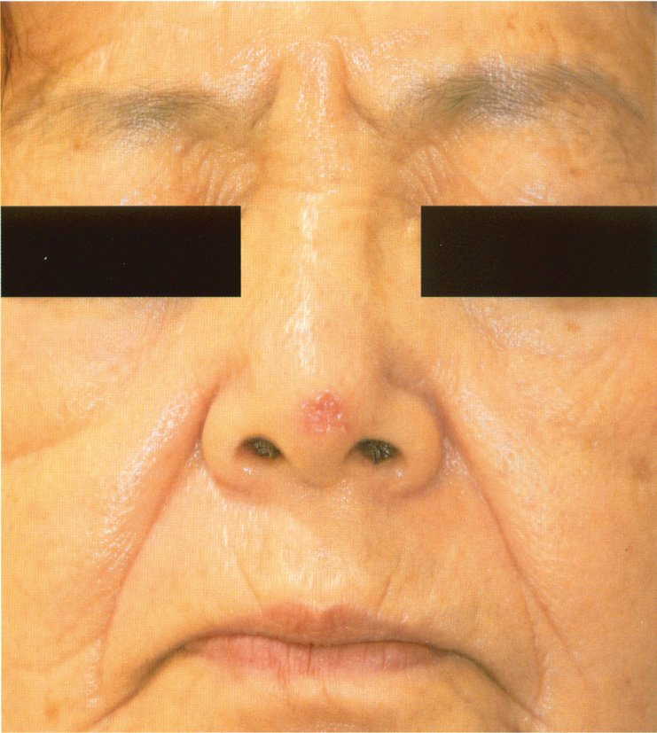
| 選択肢 | 解説 |
|---|---|
| ａ 飲 酒 | 飲酒は口腔・咽頭・喉頭・食道の扁平上皮癌、肝細胞癌のリスクとなるが、皮膚の有棘細胞癌の主要な病因ではない。 |
| ｂ 肥 満 | 肥満は子宮体癌・乳癌（閉経後）・大腸癌・腎細胞癌・食道腺癌などのリスクとなる。皮膚では黒色表皮腫（インスリン抵抗性）・間擦疹・カンジダ症などと関連するが、有棘細胞癌の病因ではない。 |
| ◯ ｃ 紫外線 | 高齢者の鼻尖部という典型的な露光部に、20年という長い経過で生じた有棘細胞癌である。皮膚有棘細胞癌の最大の病因は紫外線（UVB）によるDNA損傷の蓄積（p53変異など）で、多くは日光角化症を前駆病変として発生する。屋外労働歴のある高齢者の顔面・頭部（禿頭）・耳介・手背が好発部位であり、本例の病歴と完全に合致する。 |
| ｄ アスベスト | アスベスト（石綿）は悪性胸膜中皮腫・肺癌の原因であり、曝露から発症までの潜伏期が20〜50年と長い点が国試の頻出事項。皮膚腫瘍とは関連しない。 |
| ｅ EB ウイルス | EBウイルスは伝染性単核球症、Burkittリンパ腫、上咽頭癌、Hodgkinリンパ腫、胃癌の一部、移植後リンパ増殖性疾患と関連する。皮膚の有棘細胞癌に関与するウイルスはEBVではなくHPV（ヒトパピローマウイルス）であり、それも外陰・肛囲や疣贅状表皮発育異常症での関与が中心である。 |
| 項目 | 基底細胞癌 | 有棘細胞癌 |
|---|---|---|
| 由来 | 基底細胞・毛包 | 有棘細胞（角化細胞） |
| 好発部位 | 顔面正中（鼻・内眼角） | 顔面・耳介・下口唇・禿頭・手背／瘢痕・潰瘍 |
| 臨床 | 黒色光沢の結節、中心陥凹・堤防状の縁 | 角化を伴う紅色腫瘤、易出血、潰瘍、悪臭 |
| 前駆病変 | 脂腺母斑 | 日光角化症・Bowen病・瘢痕 |
| 病理 | 柵状配列＋裂隙 | 癌真珠・細胞間橋・角化 |
| 転移 | ほぼしない | する（リンパ行性） |
| マージン | 3〜5mm | 4〜10mm以上 |
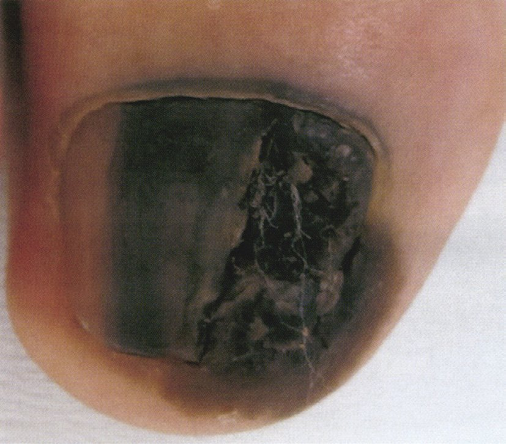
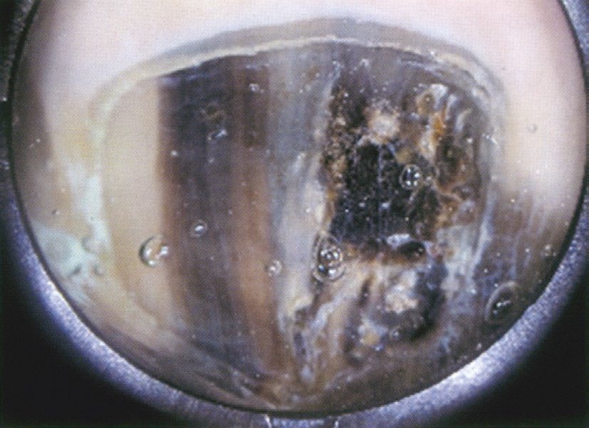
| 選択肢 | 解説 |
|---|---|
| ａ Bowen病 | Bowen病は表皮内の有棘細胞癌で、境界明瞭で不整形の紅褐色局面（鱗屑・痂皮を伴う）である。爪部に黒色の縦条を作る疾患ではない。 |
| ◯ ｂ 悪性黒色腫 | ①20年前からの爪の褐色斑（色素線条）が、②半年前から急速に拡大し出血、③爪郭に色素がはみ出している（Hutchinson徴候）、④所属リンパ節（右鼠径）を触知——末端黒子型悪性黒色腫〈acral lentiginous melanoma〉である。日本人の悪性黒色腫では足底・爪部が最多で、本例のように「良性と言われて何年も放置された」のち進行して発見されるのが典型的な悲劇のパターンである。 |
| ｃ 基底細胞癌 | 基底細胞癌は顔面正中に好発し、爪部（足趾）に生じることは極めてまれ。形態も中心が陥凹し辺縁が堤防状に隆起する黒色結節で、爪甲の縦の色素線条という形はとらない。 |
| ｄ 色素性母斑 | 爪部の色素性母斑（爪甲色素線条の良性原因）では、線条の幅・色調が均一で境界明瞭、経過中に大きく変化しない。小児では母斑による幅広い線条もあるが、成人で「急速に拡大し出血する」変化があれば良性とは言えない。10年前の「良性」という診断に引きずられてはいけない——評価すべきはこの半年の変化である。 |
| ｅ 乳房外Paget病 | 乳房外Paget病はアポクリン腺領域（外陰・肛囲・腋窩）に生じる表皮内腺癌で、境界明瞭な紅色局面を呈する。足趾の爪部に黒色線条として現れることはない。 |
| 疾患 | 特徴 | 経過 |
|---|---|---|
| 爪部悪性黒色腫 | 幅広く不均一な線条、近位で幅広い、Hutchinson徴候 | 拡大・濃染・爪甲破壊・出血 |
| 爪母の色素性母斑 | 均一な幅・色調、境界明瞭 | 不変または緩徐 |
| 生理的色素線条 | 複数指趾に多発、細い | 不変 |
| 爪下血腫 | 紫黒色。外傷歴 | 爪の伸長とともに遠位へ移動して消える |
| 爪白癬 | 白濁・肥厚・脆弱。KOHで菌糸 | 緩徐に進行 |
| グロムス腫瘍 | 爪下の青紅色点。強い自発痛・冷水で増悪 | 疼痛が主訴 |
| 選択肢 | 解説 |
|---|---|
| ａ IL-17 | IL-17を標的とする抗体薬（セクキヌマブ、イキセキズマブ、ブロダルマブ〈IL-17受容体A〉）は尋常性乾癬・乾癬性関節炎・膿疱性乾癬に用いる。IL-23阻害薬（ウステキヌマブ、グセルクマブ）と並ぶ乾癬の生物学的製剤で、腫瘍治療薬ではない。 |
| ｂ EGF受容体 | 抗EGFR抗体（セツキシマブ、パニツムマブ）はRAS野生型の大腸癌、頭頸部扁平上皮癌に用いる。副作用として痤瘡様皮疹・皮膚乾燥・爪囲炎が生じ、皮膚科的には有名だが、悪性黒色腫の標的ではない。 |
| ｃ IL-6受容体 | 抗IL-6受容体抗体（トシリズマブ、サリルマブ）は関節リウマチ、若年性特発性関節炎、Castleman病、高安動脈炎、サイトカイン放出症候群に用いる。 |
| ◯ ｄ PD〈programmed cell death〉-1 | 抗PD-1抗体（ニボルマブ、ペムブロリズマブ）は切除不能・転移性悪性黒色腫の標準治療である。腫瘍細胞のPD-L1がT細胞のPD-1に結合してT細胞を不活化する「免疫チェックポイント」を遮断し、疲弊したT細胞の抗腫瘍活性を回復させる。ニボルマブは日本で悪性黒色腫を最初の適応として承認された免疫チェックポイント阻害薬で、抗CTLA-4抗体（イピリムマブ）との併用でさらに奏効率が上がる。 |
| ｅ VEGF〈vascular endothelial growth factor〉 | 抗VEGF抗体（ベバシズマブ）は大腸癌・非小細胞肺癌・卵巣癌・膠芽腫などに用いる血管新生阻害薬である。副作用は高血圧・蛋白尿・出血・創傷治癒遅延・消化管穿孔。悪性黒色腫の標準治療の標的ではない。 |
| 標的 | 薬剤 | 適応 |
|---|---|---|
| PD-1 | ニボルマブ、ペムブロリズマブ | 悪性黒色腫、非小細胞肺癌、腎細胞癌ほか |
| CTLA-4 | イピリムマブ | 悪性黒色腫（PD-1阻害薬と併用） |
| IL-4/13受容体 | デュピルマブ | アトピー性皮膚炎、気管支喘息 |
| IL-17／IL-17受容体 | セクキヌマブ、ブロダルマブ | 乾癬 |
| IL-23（p19） | グセルクマブ | 乾癬 |
| TNF-α | インフリキシマブ、アダリムマブ | 乾癬、関節リウマチ、Crohn病、Behçet病 |
| IgE | オマリズマブ | 慢性蕁麻疹、気管支喘息 |
| CCR4 | モガムリズマブ | ATL、菌状息肉症／Sézary症候群 |
| EGFR | セツキシマブ | 大腸癌・頭頸部癌（副作用に痤瘡様皮疹） |
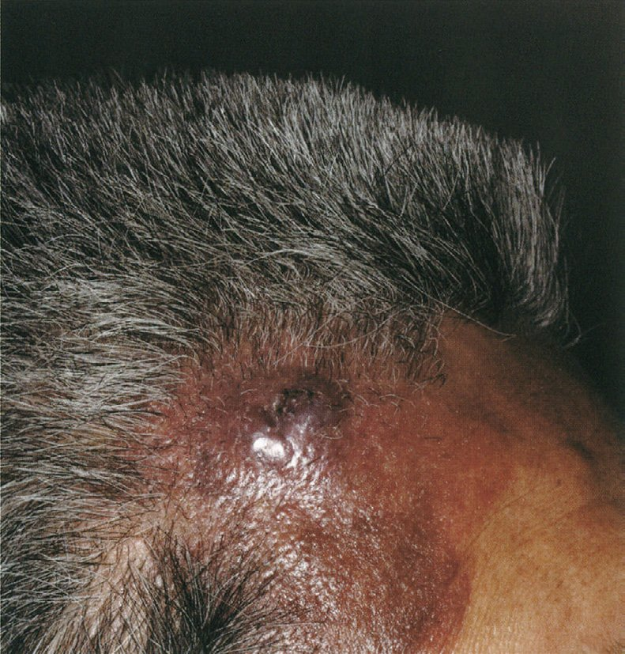
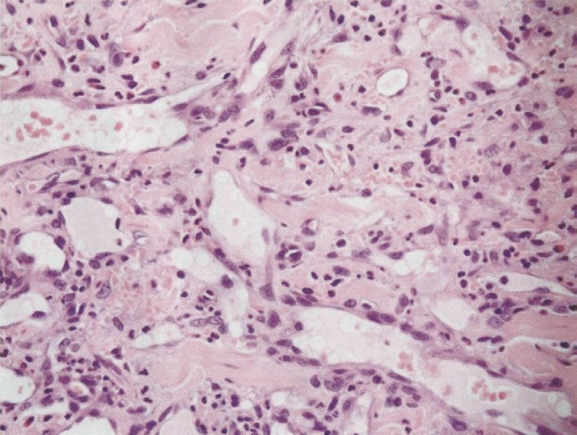
| 選択肢 | 解説 |
|---|---|
| ◯ ａ 血管肉腫 | 高齢男性の頭部に生じた紫紅色斑が7か月で拡大・隆起し易出血性となった——頭部血管肉腫の典型的な提示である。病理では、核異型の強い内皮細胞が不規則に吻合する血管腔を裏打ちして増殖し、既存の膠原線維束の間を解離するように浸潤する（dissecting pattern）。CD31・CD34・ERG陽性で確定する（Q.159・Q.187）。 |
| ｂ 基底細胞癌 | 基底細胞癌は黒色光沢のある結節で中心が潰瘍化し辺縁が堤防状に隆起する。紫紅色のびまん性の斑として広がる形はとらない。病理も柵状配列と裂隙を伴う上皮性腫瘍胞巣であり、本例の血管性の増殖像とは全く異なる。 |
| ｃ 海綿状血管腫 | 海綿状血管腫（静脈奇形）は拡張した血管腔が海綿状に集まった良性病変で、多くは出生時〜小児期から存在し、柔らかく圧迫で退色（縮小）する青紫色の腫瘤である。病理では内皮細胞に異型がなく一層で、浸潤性増殖もない。高齢者に新たに出現して7か月で拡大することはない。 |
| ｄ グロムス腫瘍 | グロムス腫瘍は動静脈吻合を調節するグロムス小体に由来する良性腫瘍で、爪下に好発する数mmの青紅色の小結節。発作性の強い自発痛・圧痛、寒冷での増悪が特徴。頭部にびまん性の紫紅色局面を作る疾患ではない。 |
| ｅ 巨細胞性動脈炎〈側頭動脈炎〉 | 巨細胞性動脈炎は高齢者の側頭動脈を主座とする血管炎で、拍動を触れる索状に腫脹した側頭動脈、側頭部痛、顎跛行、赤沈亢進・CRP上昇、リウマチ性多発筋痛症の合併、虚血性視神経症による突然の視力障害が特徴である。「血管に沿った索状の腫脹」であり、面として広がる紫紅色斑ではない。病理は中膜の肉芽腫性炎症と多核巨細胞、内弾性板の破壊で、腫瘍性増殖ではない。 |
| 疾患 | 良悪 | 特徴 |
|---|---|---|
| 血管肉腫 | 悪性 | 高齢者の頭部。拡大・隆起・出血。肺転移。予後不良 |
| Kaposi肉腫 | 悪性（低〜中悪性度） | HHV-8。古典型は下腿、AIDS関連型は多発 |
| 血管拡張性肉芽腫 | 良性 | 外傷後の有茎性鮮紅色小結節。易出血だが自己限定的 |
| 乳児血管腫（いちご状血管腫） | 良性（腫瘍） | 生後数週から増大→1歳以降に自然消退。大きければプロプラノロール |
| 単純性血管腫（毛細血管奇形） | 良性（奇形） | 出生時から。自然消退しない。三叉神経第1枝領域ならSturge-Weber症候群 |
| 海綿状血管腫（静脈奇形） | 良性（奇形） | 圧迫で縮小。深部に及ぶ |
| グロムス腫瘍 | 良性 | 爪下の青紅色点。発作性疼痛・寒冷で増悪 |
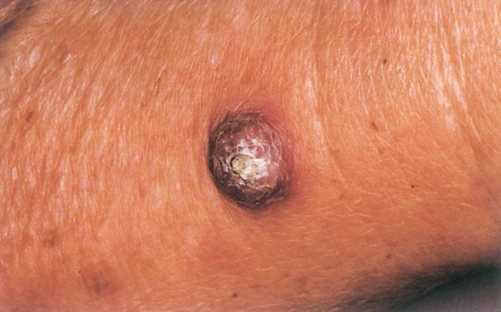
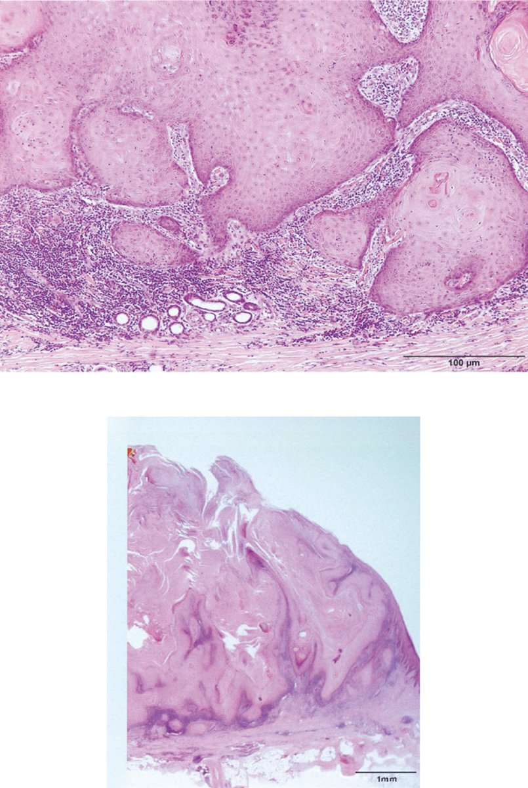
| 選択肢 | 解説 |
|---|---|
| ａ 粉 瘤 | 粉瘤〈表皮嚢腫〉は、表皮成分が真皮内に嚢腫を作り角質を溜めたもので、中央に黒点状の開口部をもつドーム状の皮下腫瘤で波動を触れ、圧すると悪臭のある粥状物が出る。本例は「波動はなく弾性硬」であり、病理も嚢腫壁ではなく有棘細胞の腫瘍性増殖で合致しない。 |
| ｂ 基底細胞癌 | 基底細胞癌は顔面正中に好発し、数か月〜数年かけて緩徐に増大する。3週間で3mmから12mmへ急速増大し、その後自然縮小する経過はとらない。病理も柵状配列を伴う基底細胞様胞巣である。 |
| ｃ 有棘細胞癌 | 有棘細胞癌は本症と病理像が酷似し、実際に鑑別が最も難しい。しかし有棘細胞癌は自然消退せず、放置すれば増大を続けて潰瘍化・転移する。本例の「生検1か月後にピーク時の25％以下に縮小」という自然消退傾向が決定的にこれを否定する。なお両者の鑑別は病理でも難しく、ケラトアカントーマを高分化型有棘細胞癌の一亜型とみなす考え方もある。 |
| ｄ グロムス腫瘍 | グロムス腫瘍は爪下に好発する数mmの青紅色小結節で、発作性の激痛・圧痛・冷水での増悪が主訴となる。角栓を伴う褐色腫瘤ではなく、病理も血管周囲のグロムス細胞の増殖である。 |
| ◯ ｅ ケラトアカントーマ | ①高齢者の日光曝露部（手背）、②数週間で急速に増大（3mm→12mm）、③中央に角栓を伴うドーム状・火口状の結節、④病理で中央が陥凹して角質が充満し、有棘細胞が増殖する「crateriform architecture」、⑤経過中に自然縮小——ケラトアカントーマ〈keratoacanthoma〉の典型的な三相性（急速増殖期→静止期→退縮期）の経過である。 |
| 疾患 | 速さ | 手がかり |
|---|---|---|
| ケラトアカントーマ | 数週間で1〜2cm | 中央の角栓・火口状。自然消退する |
| 血管拡張性肉芽腫 | 数週間 | 外傷契機・有茎性の鮮紅色・易出血 |
| Merkel細胞癌 | 数週〜数か月 | 高齢者の露光部、赤〜紫紅色のドーム状で無痛性。転移が早い |
| 有棘細胞癌 | 数か月 | 角化・潰瘍・悪臭。消退しない |
| 粉瘤（炎症性） | 数日（感染時） | 中央の黒点、波動、圧痛、悪臭のある内容 |
| 癤（せつ） | 数日 | 発赤・熱感・強い圧痛。膿栓 |
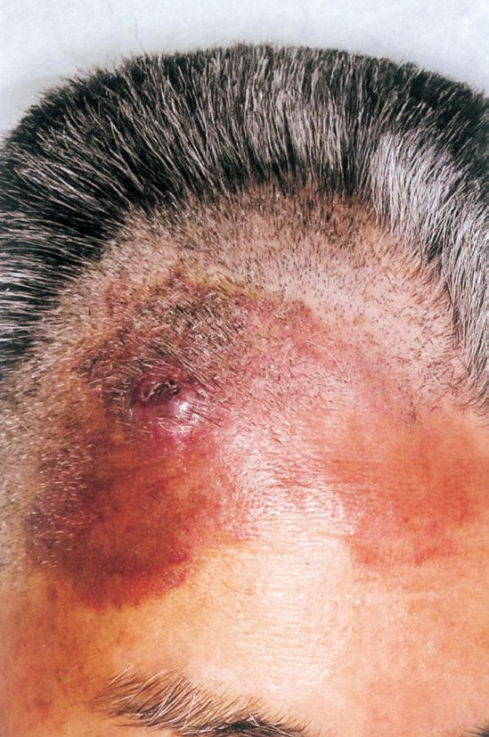
| 選択肢 | 解説 |
|---|---|
| ◯ ａ 肺転移しやすい。 | 本例は頭部血管肉腫である。血管肉腫は早期から血行性に転移し、とくに肺転移が高頻度である。肺転移巣は薄壁の嚢胞状病変となりやすく、破綻して気胸（両側性・反復性のことがある）を来すのが本症に特徴的な所見として知られる。診断時には胸部CTによる肺転移の検索が必須である。 |
| ｂ 生検は禁忌である。 | 生検は禁忌ではなく、むしろ確定診断のために必須である。血管肉腫は「打撲後の血腫」「老人性紫斑」と誤認されて診断が遅れることが最大の問題であり、疑った時点で速やかに生検して免疫染色（CD31・CD34）で確定することが求められる。易出血性のため止血に配慮する必要はあるが、禁忌という根拠はない。 |
| ｃ HIV感染と関連がある。 | HIV感染と関連する血管系腫瘍はKaposi肉腫である。Kaposi肉腫はヒトヘルペスウイルス8型〈HHV-8〉が原因で、AIDS関連型では顔面・体幹・口腔粘膜に多発する紫紅色の斑・結節を来す。血管肉腫はウイルス関連ではない。 |
| ｄ 九州・沖縄地方に多い。 | 九州・沖縄地方に多いのはHTLV-1関連の成人T細胞白血病リンパ腫〈ATL〉である。血管肉腫に地域集積性はない。ATLの皮膚病変は紅斑・丘疹・結節・紅皮症と多彩で、末梢血のflower cell、高Ca血症、抗HTLV-1抗体陽性で診断する。 |
| ｅ レーザー治療が著効する。 | レーザー治療が有効なのは、単純性血管腫（色素レーザー）・太田母斑や異所性蒙古斑（Qスイッチレーザー）などの良性の色素・血管病変である。悪性腫瘍にレーザーを当てても腫瘍細胞は残り、病理標本も得られないため有害である。血管肉腫の治療は広範切除＋放射線＋化学療法の集学的治療。 |
| 疾患 | 関連因子 | 皮膚所見 |
|---|---|---|
| 血管肉腫 | なし（高齢・頭部／リンパ浮腫／放射線） | 頭部の紫紅色斑→隆起・出血。肺転移 |
| Kaposi肉腫 | HHV-8、HIV感染・免疫抑制 | 紫紅色の斑・局面・結節。多発。口腔粘膜にも |
| 成人T細胞白血病リンパ腫 | HTLV-1、九州・沖縄 | 紅斑・丘疹・結節・紅皮症。高Ca血症・flower cell |
| Merkel細胞癌 | Merkel細胞ポリオーマウイルス、免疫抑制 | 高齢者露光部の赤紫色ドーム状結節。転移が早い |
| Bowen様丘疹症 | HPV16など | 外陰部の褐色扁平丘疹 |
| 選択肢 | 解説 |
|---|---|
| ａ 硬結性紅斑 | 硬結性紅斑〈Bazin硬結性紅斑〉は、結核菌に対するアレルギー反応による結核疹の一型で、若い女性の下腿後面に、疼痛を伴う皮下結節が生じ、潰瘍化して瘢痕を残す。悪性化しやすい疾患ではない。 |
| ｂ 膿疱性乾癬 | 膿疱性乾癬は、発熱・全身の紅斑上に無菌性膿疱が多発し、全身状態が悪化しうる重症型の乾癬である。難治で生物学的製剤の適応となるが、有棘細胞癌の素地にはならない。なお乾癬に対するPUVA療法を長期・大量に行った場合には皮膚癌のリスクが上がるが、疾患自体が発癌するわけではない。 |
| ｃ 毛孔性苔癬 | 毛孔性苔癬〈毛孔性角化症〉は、上腕外側・大腿・頬に生じる毛孔一致性の小さな角化性丘疹で、思春期に目立ち加齢とともに軽快する体質的な変化。悪性化しない。 |
| ｄ 壊疽性膿皮症 | 壊疽性膿皮症は、辺縁が穿掘性・堤防状で紫紅色を呈する有痛性の潰瘍で、炎症性腸疾患・関節リウマチ・血液疾患に随伴する。慢性の潰瘍という点では発癌の素地になりうるが、「有棘細胞癌を発症しやすい疾患」として典型的に挙げられるものではない。むしろ有棘細胞癌の潰瘍が壊疽性膿皮症と誤診されることがある。 |
| ◯ ｅ 色素性乾皮症 | 色素性乾皮症〈XP〉は、紫外線によるDNA損傷を修復するヌクレオチド除去修復の欠損により、若年から露光部に有棘細胞癌・基底細胞癌・悪性黒色腫が多発する常染色体潜性〈劣性〉遺伝疾患である。皮膚癌の発生率は健常人の千倍以上、発症年齢の中央値は10歳未満〜10歳代と極めて早い（Q.172）。徹底した遮光が唯一の予防手段である。 |
| 疾患 | 遺伝形式 | 皮膚腫瘍 |
|---|---|---|
| 色素性乾皮症 | 常染色体潜性 | 有棘細胞癌・基底細胞癌・悪性黒色腫が若年から多発 |
| 母斑基底細胞癌症候群〈Gorlin症候群〉 | 常染色体顕性（PTCH1） | 多発性基底細胞癌、掌蹠の小陥凹、顎骨嚢胞、大脳鎌の石灰化 |
| 栄養障害型表皮水疱症 | 常染色体潜性／顕性（COL7A1） | 慢性びらん部からの有棘細胞癌（予後規定因子） |
| 疣贅状表皮発育異常症 | 常染色体潜性 | HPV関連の扁平疣贅様病変から有棘細胞癌 |
| Muir-Torre症候群 | 常染色体顕性（ミスマッチ修復） | 脂腺腫瘍・ケラトアカントーマ＋大腸癌 |
| Cowden病 | 常染色体顕性（PTEN） | 外毛根鞘腫・口腔粘膜の乳頭腫＋乳癌・甲状腺癌 |
| 選択肢 | 解説 |
|---|---|
| ａ 放射線感受性が高い。 | 悪性黒色腫は伝統的に放射線感受性が低い腫瘍とされる。放射線は切除不能例・骨転移や脳転移の症状緩和・リンパ節郭清後の局所制御など補助的に用いられるにとどまり、根治手段は外科的切除である。 |
| ｂ 日本人では結節型が多い。 | 日本人で最も多いのは末端黒子型〈acral lentiginous melanoma〉で約半数を占める。足底・足趾・爪部・手掌に生じ、紫外線とは無関係である。結節型は初めから垂直方向に増殖し予後不良だが、頻度としては末端黒子型に及ばない。白人で最多なのは表在拡大型である。 |
| ｃ 部分生検によって診断する。 | 悪性黒色腫の生検は原則として全切除生検（狭いマージンで病変全体を一括切除）で行う。部分生検では腫瘍の最も厚い部分を外す可能性があり、Breslow厚を過小評価して病期・治療方針を誤る。巨大病変や顔面・掌蹠など全切除が困難な部位ではやむを得ず部分生検を行うことがあるが、「部分生検によって診断する」を原則とは言えない。 |
| ｄ TNM病期分類のpTは原発巣の大きさで判定する。 | 悪性黒色腫のpTは「大きさ（面積・直径）」ではなく腫瘍の厚さ〈Breslow thickness〉と潰瘍の有無で決まる。水平方向にどれだけ広がっていても、薄ければ予後はよい——これが他の多くの癌（大きさでTを決める）と決定的に異なる点である（Q.162）。 |
| ◯ ｅ センチネルリンパ節生検はリンパ節郭清の適応決定に有用である。 | 正しい。センチネルリンパ節〈sentinel lymph node〉とは、原発巣から流れるリンパが最初に到達するリンパ節である。色素とラジオアイソトープで同定して摘出し、転移の有無を病理で調べる。陰性なら以遠のリンパ節にも転移はないと判断でき、不要な郭清（リンパ浮腫などの合併症を伴う）を回避できる。陽性なら郭清や薬物療法を検討する——つまり「病期診断と治療方針の決定」のための検査である。 |
| 項目 | 正しい理解 | よくある誤り |
|---|---|---|
| 日本人の最多病型 | 末端黒子型（足底・爪） | 結節型／表在拡大型 |
| 生検 | 全切除生検が原則 | 部分生検で診断 |
| pTの決定 | 腫瘍厚（Breslow）＋潰瘍の有無 | 腫瘍の大きさ（直径） |
| 放射線 | 感受性は低い（補助的） | 放射線が第一選択 |
| センチネル生検 | 郭清の適応決定＝病期診断 | 診断（悪性かどうかの判定）のため |
| 切除マージン | 腫瘍厚に応じて0.5〜2cm | 一律に広く切る |
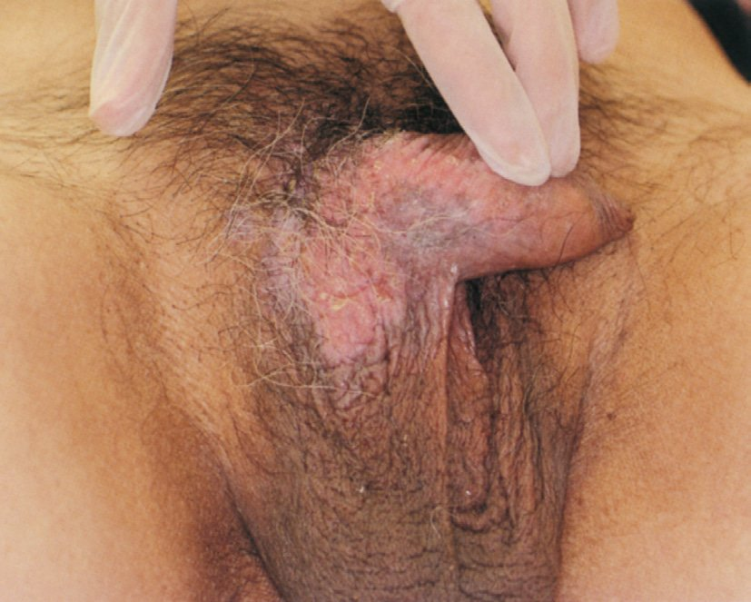
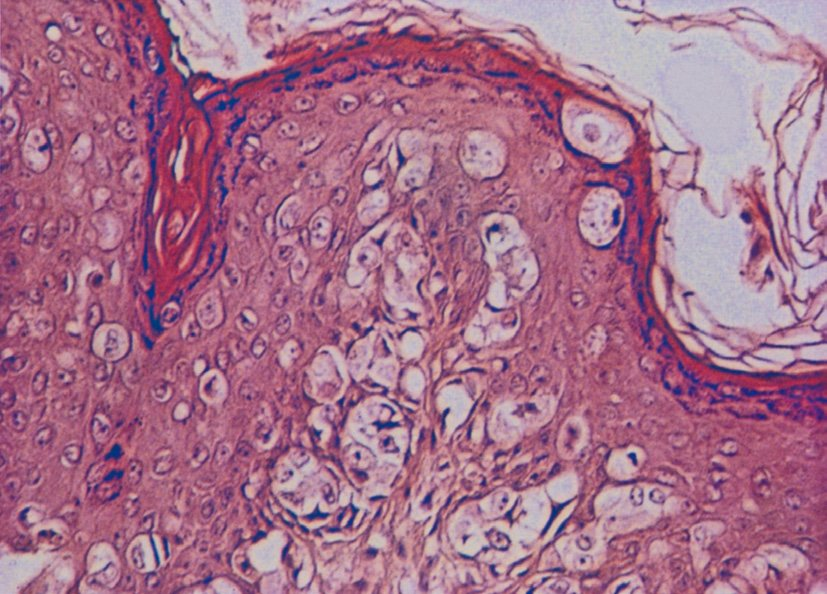
| 選択肢 | 解説 |
|---|---|
| ａ 血管肉腫 | 血管肉腫は高齢者の頭部・顔面に好発する紫紅色の斑・局面で、陰部に生じることはまれ。病理も異型内皮細胞による血管腔の増殖であり、表皮内に散在する大型細胞という像ではない。 |
| ｂ Bowen病 | Bowen病は陰部にも生じうる表皮内癌で、臨床的には本症と紛らわしい。しかし病理は「表皮全層にわたる有棘細胞の異型」＝細胞は表皮の細胞として連続的に配列し、核が大小不同で極性を失い、異常角化細胞や多核細胞が混じる。明るい胞体をもつ大型細胞が孤在性に散らばる像ではない。免疫染色でもBowen病はCK7陰性・PAS陰性で区別できる。 |
| ｃ 基底細胞癌 | 基底細胞癌は顔面正中に好発し、陰囊はきわめてまれ。黒色調で中心が潰瘍化した結節を作り、病理は柵状配列と裂隙を伴う腫瘍胞巣である。 |
| ｄ 悪性黒色腫 | 悪性黒色腫なら黒色調が主体で、病理では異型メラノサイトの増殖とメラニン顆粒を認め、S-100・HMB-45・Melan-A陽性を示す。本例は紅色局面であり合致しない。ただし乳房外Paget病のPaget細胞にメラニンが取り込まれ色素性に見える例（pigmented EMPD）があり、このとき免疫染色（CK7陽性／S-100陰性）が決め手になる。 |
| ◯ ｅ 乳房外Paget病 | ①高齢男性の陰囊、②3年にわたり市販薬で治療されても治らず緩徐に拡大、③痒みを伴う境界明瞭な紅色局面、④病理で表皮内に明るく広い胞体と大型核をもつ細胞が孤在性・胞巣状に散在（pagetoid spread）——乳房外Paget病の典型像である。PAS陽性・CK7陽性・CEA陽性、S-100陰性で確定する（Q.155・Q.190）。 |
| 疾患 | 散在する細胞 | 免疫染色 |
|---|---|---|
| 乳房外Paget病／乳房Paget病 | Paget細胞（腺系） | CK7＋、CEA＋、PAS＋、S-100− |
| 表在拡大型悪性黒色腫（pagetoid melanoma） | 異型メラノサイト | S-100＋、HMB-45＋、Melan-A＋、CK7− |
| Bowen病（pagetoid型） | 異型角化細胞 | 高分子CK＋、CK7− |
| 菌状息肉症（Pautrier微小膿瘍） | 異型T細胞 | CD3＋、CD4＋、CK− |
| Langerhans細胞組織球症 | Langerhans細胞 | S-100＋、CD1a＋、Langerin＋ |
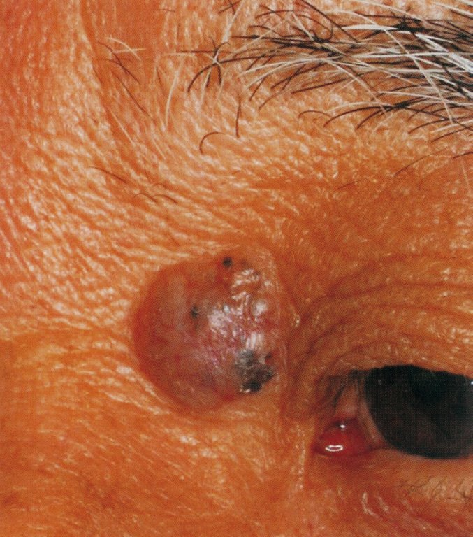
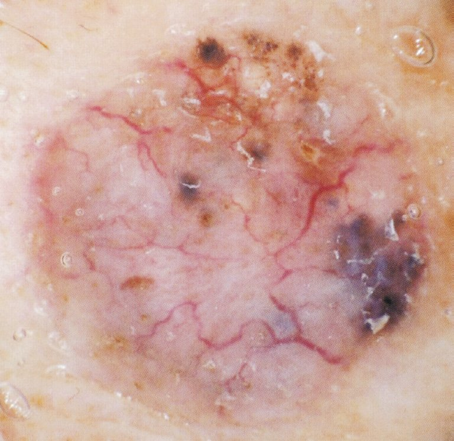
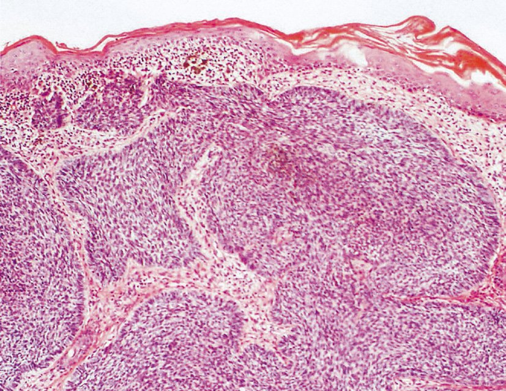
| 選択肢 | 解説 |
|---|---|
| ａ 温熱療法 | 温熱療法は皮膚悪性腫瘍の標準治療ではない。完全切除後に追加する根拠はまったくない。 |
| ｂ 拡大切除 | 拡大切除が必要なのは断端陽性の場合である。本例は5mmマージンで断端陰性が確認されており、追加切除は不要。内眼角部は整容・機能上の制約が大きい部位であり、不要な追加切除は避けるべきである。 |
| ◯ ｃ 経過観察 | 臨床像（内眼角部の黒色光沢のある結節）、ダーモスコピー（樹枝状血管・青灰色類円形胞巣）、病理（柵状配列と裂隙を伴う基底細胞様腫瘍胞巣）から基底細胞癌である。基底細胞癌は遠隔転移をほぼ来さず、断端陰性で切除できていれば追加治療は不要。内眼角部はH-zoneと呼ばれる再発高リスク部位なので、局所再発と新規病変の監視のための定期的な経過観察を行う（Q.157）。 |
| ｄ 電子線照射 | 放射線は手術困難例・断端陽性で追加切除できない例に限って考慮する。完全切除後の予防照射に意義はなく、眼周囲では白内障・角膜障害・涙道障害などの有害事象リスクがあるため避けるべきである。 |
| ｅ 抗癌化学療法 | 化学療法・分子標的薬（ヘッジホッグ阻害薬）は切除不能な局所進行例や転移例に限られる。完全切除された基底細胞癌に術後補助化学療法を行う根拠はない。 |
| 状況 | 対応 |
|---|---|
| 断端陰性・転移しない腫瘍（基底細胞癌・表皮内癌） | 経過観察 |
| 断端陽性 | 追加切除（不能なら放射線） |
| 有棘細胞癌（断端陰性） | 経過観察＋所属リンパ節の触診・エコーで転移監視 |
| 悪性黒色腫（生検で確定後） | 腫瘍厚に応じた拡大切除＋センチネルリンパ節生検 |
| 乳房外Paget病 | マッピング生検を踏まえた広範切除。再発監視 |
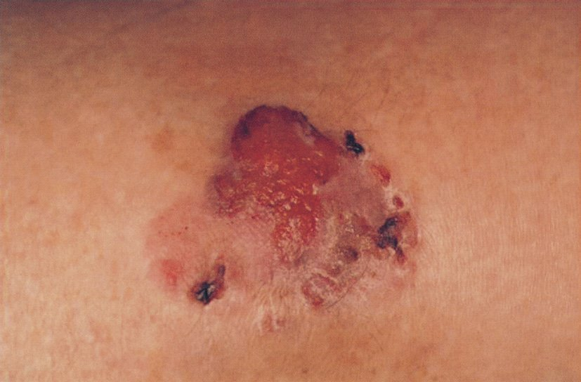
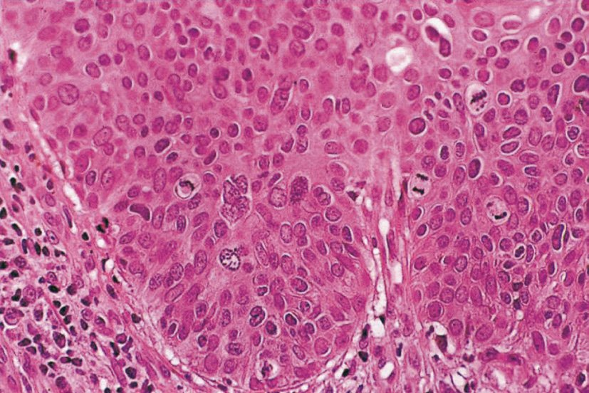
| 選択肢 | 解説 |
|---|---|
| ａ 光線療法 | 光線（紫外線）療法は乾癬・尋常性白斑・菌状息肉症（早期）・アトピー性皮膚炎などに用いる。Bowen病は表皮内癌であり、紫外線はむしろ発症要因である。照射すればDNA損傷を上乗せするだけで有害。 |
| ◯ ｂ 外科的切除 | 病理は表皮全層にわたる有棘細胞の異型（核の大小不同・過染・極性の消失、異常角化細胞、多核細胞）で、基底膜は保たれている＝Bowen病（表皮内有棘細胞癌）である。治療の第一選択は外科的切除で、病変全体を病理に回せるため真皮浸潤（Bowen癌）の有無を確認できる点でも合理的である。表皮内に留まる限り転移せず、完全切除で治癒する。 |
| ｃ 抗癌化学療法 | 全身化学療法は転移例に対する治療である。Bowen病は表皮内癌で転移しないため、88歳の患者に全身化学療法を行うのは有害無益である。なお局所の5-FU外用は表在性の病変に対する選択肢の一つだが、これは「抗癌化学療法（全身投与）」とは別である。 |
| ｄ 抗菌薬の投与 | 細菌感染を示唆する所見（発熱・疼痛・熱感・膿性分泌・白血球増多・CRP上昇）がない。3年かけて緩徐に拡大する無症候性の紅斑局面は感染症の経過ではない。 |
| ｅ 抗真菌薬の投与 | 体部白癬は辺縁が堤防状に隆起して中心が治癒傾向を示す環状の紅斑で、KOH直接鏡検で菌糸を確認して診断する。Bowen病は臨床的に白癬・湿疹と誤診されやすく、実際に抗真菌薬・ステロイドで治療されて何年も経過することが多い——「治らないから生検した」という本例の流れがまさにそれである。 |
| 疾患 | 特徴 | 決め手 |
|---|---|---|
| Bowen病 | 単発・片側性・不整形。数年で緩徐に拡大。無症候 | 生検（表皮全層の異型） |
| 体部白癬 | 辺縁堤防状・中心治癒傾向の環状 | KOH直接鏡検で菌糸 |
| 貨幣状湿疹 | 多発・両側性・強い瘙痒・滲出 | 治療反応性 |
| 尋常性乾癬 | 銀白色の厚い鱗屑、Auspitz現象、好発部位 | 臨床像 |
| 日光角化症 | 露光部。ざらつく。多発 | 生検（表皮下層の異型） |
| 乳房外Paget病 | 外陰・肛囲・腋窩 | 生検（Paget細胞。CK7＋） |
| 菌状息肉症 | 非露光部に多発。10〜20年の経過 | 生検（表皮向性） |
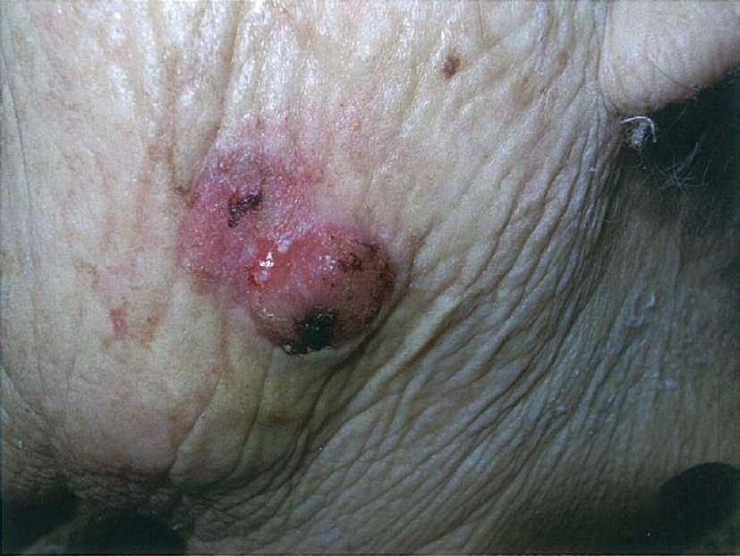
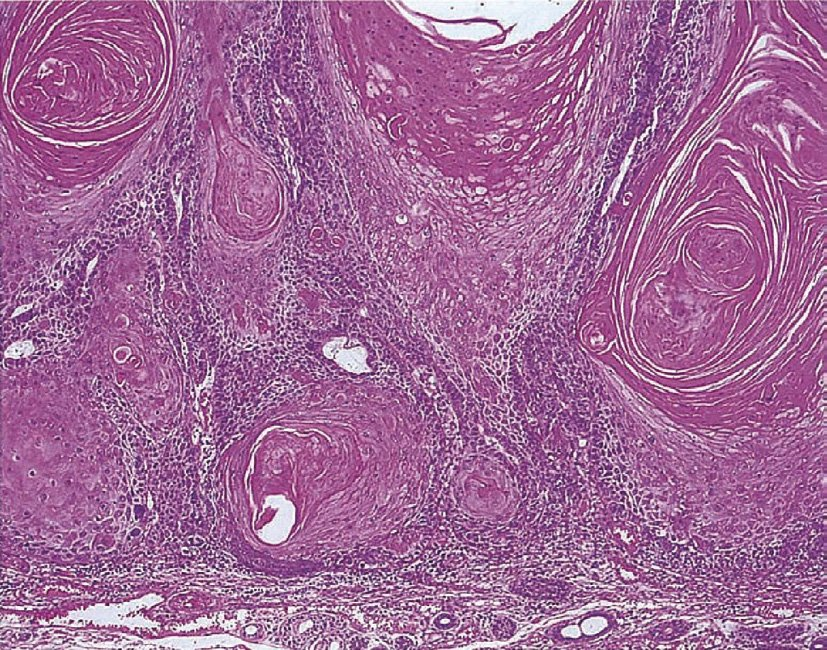
| 選択肢 | 解説 |
|---|---|
| ａ 血管肉腫 | 血管肉腫は高齢者の頭部・顔面に生じる紫紅色の斑・局面だが、それ自体が悪性腫瘍である。「他の癌の発生母地になる前癌病変」ではない。また5年前から存在して現在まで生存している経過は血管肉腫の予後（きわめて不良）と矛盾する。 |
| ｂ 菌状息肉症 | 菌状息肉症は年単位で紅斑→局面→腫瘤と進む皮膚T細胞リンパ腫で、紅斑期から腫瘍期へ進むという意味では「赤い皮疹が腫瘤になる」経過に見える。しかし菌状息肉症は非露光部に多発するのが典型で、顔面単発ではない。また病理は異型リンパ球の浸潤であり、本例の有棘細胞癌の像とは異なる。 |
| ◯ ｃ 光線角化症 | 光線角化症（＝日光角化症）は、高齢者の露光部（顔面・頭部・手背）に生じる「鱗屑を伴う紅色の平坦な斑」で、有棘細胞癌の最も代表的な前駆病変である。5年前からあった「赤い皮疹」＝光線角化症が、基底膜を破って真皮浸潤し、結節（有棘細胞癌）を形成した——という経過が問われている。病理では表皮内の異型に加え、真皮内へ浸潤する異型有棘細胞と癌真珠を認める（Q.160）。 |
| ｄ Merkel細胞癌 | Merkel細胞癌は高齢者の露光部に生じる神経内分泌腫瘍で、赤紫色のドーム状結節として急速に増大し早期に転移する。それ自体が悪性腫瘍であり前駆病変ではない。病理は小型で核細胞質比の高い円形細胞のびまん性増殖、CK20が核周囲にdot状に陽性で、角化を伴う有棘細胞癌とは異なる。 |
| ｅ 乳房外Paget病 | 乳房外Paget病は外陰部・肛囲・腋窩に生じる表皮内腺癌で、顔面には生じない。またそれ自体が癌であって、有棘細胞癌の発生母地にはならない。 |
| 母地 | できる腫瘍 | 移行を疑うサイン |
|---|---|---|
| 光線角化症 | 有棘細胞癌 | 隆起・硬結・潰瘍・急速増大 |
| Bowen病 | 有棘細胞癌（Bowen癌） | 結節形成・浸潤感 |
| 熱傷瘢痕・慢性潰瘍 | 有棘細胞癌（Marjolin潰瘍） | 治らない潰瘍・辺縁の隆起 |
| 脂腺母斑 | 基底細胞癌など | 成人期に結節が出現 |
| 先天性巨大色素性母斑 | 悪性黒色腫 | 色調・形の変化、結節 |
| 悪性黒子 | 悪性黒子型黒色腫 | 一部が濃く隆起（Q.162） |
| 局面状類乾癬 | 菌状息肉症 | 浸潤を触れる局面へ |
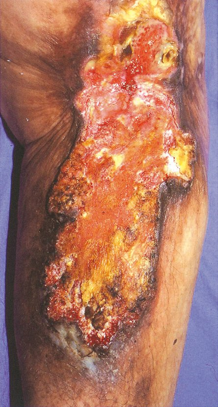
| 選択肢 | 解説 |
|---|---|
| ◯ ａ 外科的切除 | 60年前の熱傷瘢痕に生じた難治性潰瘍＝Marjolin潰瘍（瘢痕癌）＝有棘細胞癌と考える。悪性腫瘍であるから治療は外科的切除で、十分なマージンをとった切除＋植皮・皮弁による再建、および所属リンパ節（鼠径）の評価が必要である。通常の有棘細胞癌よりリンパ節転移率が高いとされ、安易な保存的治療で経過をみてはならない。 |
| ｂ 紫外線療法 | 紫外線は有棘細胞癌の発癌要因であり、悪性腫瘍に照射するのは有害である。光線療法の適応は乾癬・白斑・菌状息肉症などである。 |
| ｃ 血行再建手術 | 血行再建が適応となるのは末梢動脈疾患による虚血性潰瘍である。下肢の冷感・間欠性跛行・足背動脈の触知不良・ABI低下といった所見が根拠になるが、本例は熱傷瘢痕という明らかな素地があり、虚血を示唆する情報はない。 |
| ｄ 肉芽形成促進薬外用 | 創傷治癒を促す外用薬は褥瘡・外傷性潰瘍など「治る見込みのある創」に用いる。悪性腫瘍による潰瘍に外用を続ければ診断と治療が遅れるだけである。「治らない潰瘍」に対して漫然と外用を続けないこと、まず生検することが本問の教訓である。 |
| ｅ 腰部交感神経節ブロック | 交感神経節ブロックは複合性局所疼痛症候群〈CRPS〉や重症虚血肢の疼痛緩和・血流改善を目的に行う。腫瘍性潰瘍の治療にはならない。 |
| 原因 | 手がかり | 対応 |
|---|---|---|
| 悪性腫瘍（Marjolin潰瘍・有棘細胞癌） | 瘢痕・慢性潰瘍の既往、辺縁の隆起、悪臭、易出血 | 生検→広範切除 |
| 静脈うっ滞性潰瘍 | 下腿内果周囲、色素沈着・脂肪皮膚硬化症・浮腫、静脈瘤 | 圧迫療法・静脈治療 |
| 動脈性（虚血性）潰瘍 | 足趾・足部、疼痛強い、冷感、脈拍触知不良、ABI低下 | 血行再建 |
| 糖尿病性足潰瘍 | 荷重部、神経障害で無痛、胼胝を伴う | 免荷・感染管理・血糖是正 |
| 壊疽性膿皮症 | 穿掘性で紫紅色の辺縁、pathergy、IBDの合併 | ステロイド（デブリドマンは悪化させる） |
| 血管炎 | 紫斑・網状皮斑を伴う多発性潰瘍 | 原疾患の治療 |
| 選択肢 | 解説 |
|---|---|
| ａ 魚鱗癬 | 魚鱗癬は全身の皮膚が乾燥し魚の鱗のような鱗屑を生じる角化異常症で、先天性（尋常性魚鱗癬など）が大半。成人発症の後天性魚鱗癬はデルマドロームとしてHodgkinリンパ腫などに伴うが、分布は四肢伸側・体幹のびまん性乾燥であって、間擦部の褐色斑ではない。 |
| ｂ Addison病 | Addison病（慢性副腎皮質機能低下症）では、ACTH・MSH増加によりびまん性の色素沈着を来す。露光部・手掌の皮溝・関節伸側・爪床・瘢痕・口腔粘膜（歯肉・頬粘膜）に強く出るのが特徴で、全身倦怠感・体重減少・食欲不振・低血圧・低Na血症・高K血症を伴う。「表面がざらざらする」乳頭腫状の変化はない。 |
| ｃ 黒色真菌症 | 黒色真菌症〈クロモミコーシス等〉は黒色真菌による深在性真菌症で、外傷を契機に四肢の露出部に疣状・結節状の局面を単発性に形成する。間擦部に左右対称に生じる褐色斑ではない。 |
| ◯ ｄ 黒色表皮腫 | ①腋窩・鼠径という間擦部、②1か月という急速な出現、③褐色でざらつく（乳頭腫状の）色素斑、④中高年、⑤胃癌の存在——悪性型の黒色表皮腫（デルマドローム）の教科書的な組合せである。合併腫瘍の約6割が胃癌で、腫瘍の治療により皮疹が軽快し、再発とともに再燃するという並行性を示す（Q.153・Q.168）。 |
| ｅ Leser-Trélat徴候 | Leser-Trélat徴候も内臓悪性腫瘍（胃癌・大腸癌）に伴うデルマドロームだが、その内容は「脂漏性角化症〈老人性疣贅〉が短期間に多数出現する」ことである。個々の病変は境界明瞭で「貼り付けたような（stuck-on）」隆起した疣状の腫瘤であり、本例のような間擦部のびまん性の褐色斑とは形態が異なる。両者が同一患者に併存することはあるが、記載された皮疹の性状から選ぶべきはｄである。 |
| 疾患 | 分布 | 随伴所見 |
|---|---|---|
| 黒色表皮腫 | 腋窩・頸部・鼠径などの間擦部。左右対称。ざらつく | 肥満・糖尿病／内臓悪性腫瘍 |
| Addison病 | 全身びまん性。露光部・手掌皮溝・瘢痕・口腔粘膜が濃い | 低血圧・低Na・高K・易疲労 |
| ヘモクロマトーシス | 全身の灰褐色（青銅色） | 肝硬変・糖尿病・心筋症（青銅色糖尿病） |
| 肝斑 | 頬・前額に左右対称 | 妊娠・経口避妊薬。境界がぼやける |
| 薬剤性色素沈着 | 薬剤ごとに特徴的（ミノサイクリン・抗腫瘍薬） | 服薬歴 |
| Peutz-Jeghers症候群 | 口唇・口囲・指趾の点状色素斑 | 消化管過誤腫性ポリープ・腸重積 |
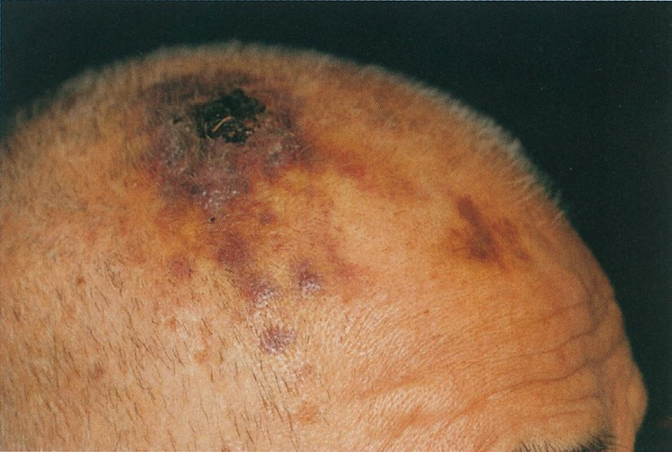
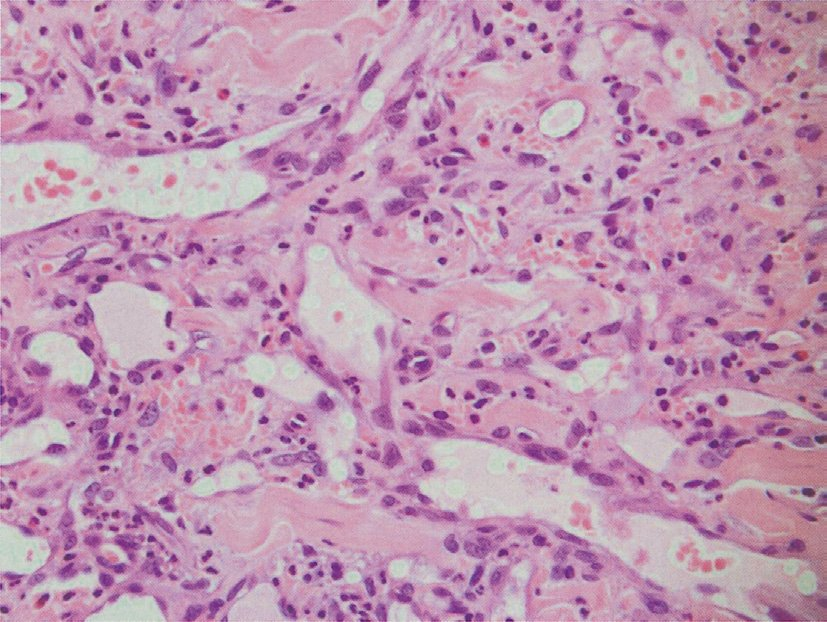
| 選択肢 | 解説 |
|---|---|
| ◯ ａ 血管肉腫 | 90歳男性の頭部に生じた紫紅色斑が7か月で拡大・隆起し易出血性となった——頭部血管肉腫である。病理では異型内皮細胞が不規則に吻合する血管腔を裏打ちし、膠原線維束の間を解離するように浸潤（dissecting pattern）する。CD31・CD34・ERG陽性で確定する（Q.159・Q.176・Q.178）。 |
| ｂ グロムス腫瘍 | グロムス腫瘍は爪下に好発する数mmの青紅色小結節で、発作性の激痛・圧痛・寒冷での増悪が特徴。病理はグロムス小体由来の均一な類円形細胞が血管腔を取り囲む像で、異型はない。頭部にびまん性の紫紅色局面を作ることはない。 |
| ｃ 海綿状血管腫 | 海綿状血管腫（静脈奇形）は拡張した血管腔が海綿状に集簇する良性の脈管奇形で、多くは出生時から存在し、柔らかく圧迫で縮小する青紫色の腫瘤。内皮細胞は一層で異型がなく、浸潤性増殖もない。 |
| ｄ 毛細血管拡張性肉芽腫 | 毛細血管拡張性肉芽腫（＝血管拡張性肉芽腫・化膿性肉芽腫）は、外傷を契機に手指・口唇などに生じる有茎性の鮮紅色小結節。数週で急速に増大するが1〜2cm程度で頭打ちとなり良性で、病理は分葉状の毛細血管増生（lobular capillary hemangioma）で内皮細胞に異型はない。 |
| ｅ Kasabach-Merritt症候群 | Kasabach-Merritt症候群は、乳児の巨大な血管性腫瘍（カポジ型血管内皮腫・房状血管腫）の内部で血小板が消費されて生じる、血小板減少と消費性凝固障害である。乳児期の疾患であり、90歳の頭部の腫瘍を説明しない。出血傾向（紫斑・貧血）を伴う点で紛らわしいが、本例の出血は腫瘍表面の易出血性である。 |
| 血管性腫瘍 | 脈管奇形 | |
|---|---|---|
| 本態 | 内皮細胞の増殖 | 血管の形成異常（増殖しない） |
| 出現 | 出生後（乳児血管腫は生後数週） | 出生時から存在 |
| 経過 | 増大期→消退期（乳児血管腫） | 自然消退しない。成長に比例 |
| 代表 | 乳児血管腫、血管拡張性肉芽腫、血管肉腫（悪性） | 単純性血管腫、海綿状血管腫、動静脈奇形 |
| 治療 | プロプラノロール（乳児血管腫）、切除 | 色素レーザー（毛細血管奇形）、硬化療法、切除 |
| 選択肢 | 解説 |
|---|---|
| ａ 針反応 | 針反応〈pathergy test〉は、滅菌針で皮膚を刺し、24〜48時間後に無菌性の膿疱・紅色丘疹が生じるかをみる検査で、Behçet病の診断基準の副症状として用いる。壊疽性膿皮症でも同様の現象がみられる。色素性病変の評価には用いない。 |
| ｂ 硝子圧法 | 硝子圧法はガラス板で圧迫して退色するかをみる方法で、紅斑と紫斑の区別、サルコイドーシスや尋常性狼瘡のリンゴゼリー様所見の確認に使う。メラニン色素は圧迫しても退色しないため、色素性病変の良悪鑑別には無力である。 |
| ｃ 皮膚描記法 | 皮膚描記法は擦過による膨疹の誘発をみるもので、機械性蕁麻疹・肥満細胞症のDarier徴候の確認に用いる。 |
| ｄ Wood灯検査 | Wood灯（長波長紫外線）検査は、白癬（Microsporum属で黄緑色蛍光）、紅色陰癬（サンゴ赤色）、癜風（黄白色）、ポルフィリン症（尿の赤色蛍光）、尋常性白斑や結節性硬化症の葉状白斑の範囲の描出に用いる。表皮のメラニンを強調するため「白斑や淡い色素斑を見やすくする」検査であって、黒色斑の良悪を判定するものではない。 |
| ◯ ｅ ダーモスコピー試験 | 足底の黒色斑では、ダーモスコピーが良悪の鑑別に決定的である。掌蹠は皮溝〈furrow〉と皮丘〈ridge：汗孔が並ぶ隆線〉が規則正しく交互に走る特殊な皮膚で、良性の色素性母斑では色素が皮溝に沿って並ぶ「平行溝パターン〈parallel furrow pattern〉」、悪性黒色腫では皮丘に沿って並ぶ「平行隆線パターン〈parallel ridge pattern〉」を示す。この一点で高い精度の判別ができる（Q.163）。 |
| 疾患 | ダーモスコピー | 経過 |
|---|---|---|
| 悪性黒色腫（末端黒子型） | 平行隆線パターン、不整な色調 | 緩徐に拡大、径が大きい、隆起・潰瘍化 |
| 色素性母斑 | 平行溝／格子状／線維状パターン | 不変または緩徐、対称 |
| 足底血腫（黒踵） | 赤紫〜黒色の均一な小塊。辺縁に衛星状の点 | スポーツ後。数週で消退・遠位へ移動 |
| ウイルス性疣贅（点状出血を伴う） | 乳頭状構造＋点状の黒色（血栓化した毛細血管） | 削ると点状出血 |
| 色素沈着（機械的刺激・薬剤） | びまん性で構造に乏しい | 原因除去で軽快 |
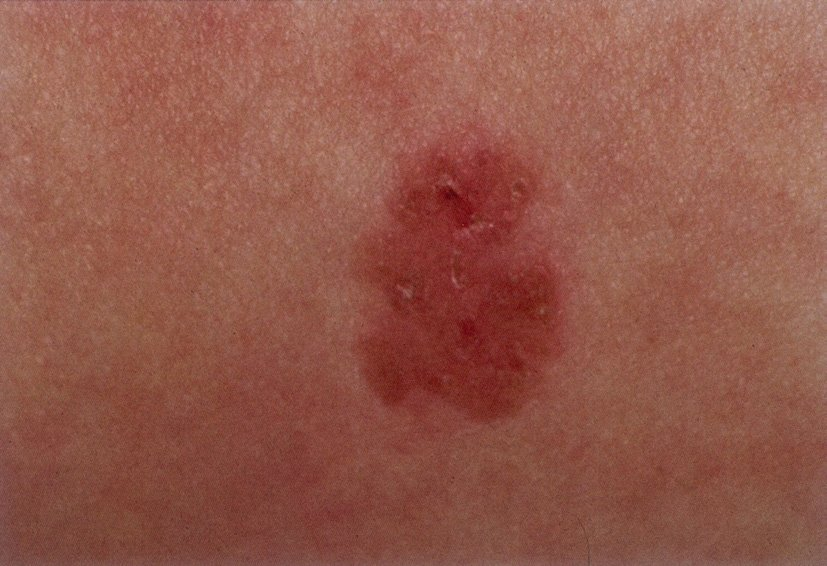
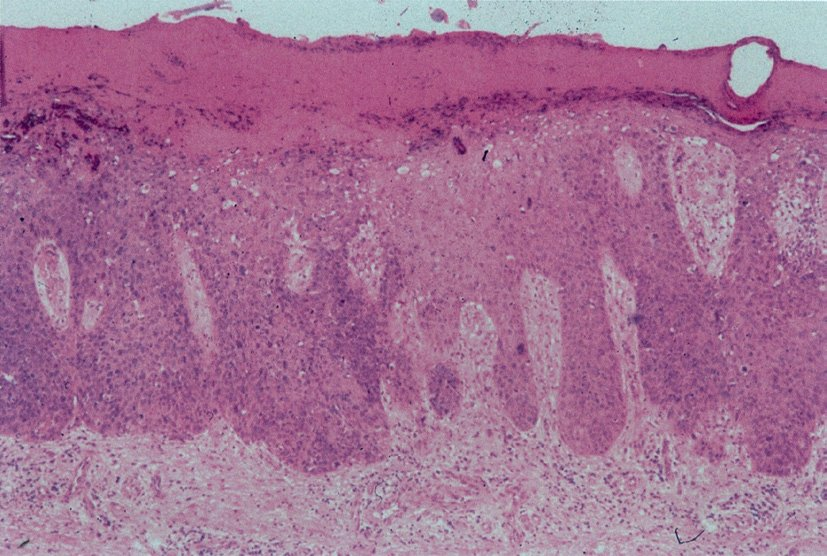
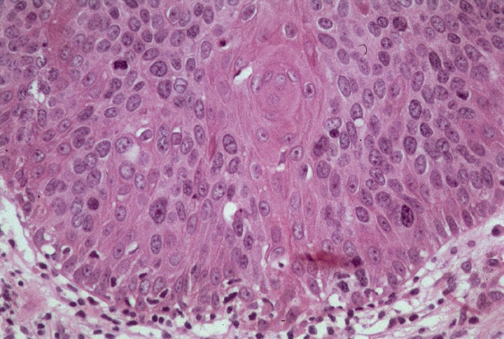
| 選択肢 | 解説 |
|---|---|
| ◯ ａ 切除手術 | 病理は表皮全層にわたる有棘細胞の異型（核の大小不同・過染・極性の喪失、異常角化細胞、多核細胞）で、基底膜は保たれている＝Bowen病（表皮内有棘細胞癌）である。治療の第一選択は外科的切除で、病変全体を病理検査に回すことで真皮浸潤の有無も確認できる（Q.183）。 |
| ｂ PUVA療法 | PUVA療法は乾癬・菌状息肉症（早期）・尋常性白斑・掌蹠膿疱症に用いる光線療法である。Bowen病は表皮内癌であり、紫外線はその発症要因の一つ。照射すればDNA損傷を上乗せするだけで、PUVAの長期・大量使用そのものが皮膚癌のリスクを上げる。 |
| ｃ 抗真菌薬塗布 | 体部白癬は辺縁が堤防状に隆起し中心が治癒傾向を示す環状の紅斑で、KOH直接鏡検で菌糸を確認して診断する。Bowen病は白癬・湿疹と誤診されて長期に外用治療されることが多い——本例の「2年かけて拡大」もその経過だが、生検で診断がついた以上、抗真菌薬に意味はない。 |
| ｄ エトレチナート内服 | エトレチナート（レチノイド）は乾癬（膿疱性乾癬・尋常性乾癬）・魚鱗癬・Darier病などの角化異常症に用いる。催奇形性が強く、女性では内服中止後2年間の避妊が必要という点が国試の頻出事項である。Bowen病の標準治療ではない。 |
| ｅ ビタミンD3軟膏塗布 | 活性型ビタミンD3外用薬（カルシポトリオール、マキサカルシトール）は角化細胞の増殖抑制と分化誘導により尋常性乾癬に用いる。Bowen病には無効。本問の誤答の多く（正答率57％）は、臨床写真の紅斑局面を乾癬と誤認したことによると考えられる。写真ではなく病理（B，C）を根拠に判断するのが正しい。 |
| 治療 | 適応 | 要点 |
|---|---|---|
| 外科的切除 | Bowen病、日光角化症、有棘細胞癌、基底細胞癌、悪性黒色腫 | 病理で断端と浸潤を評価できる |
| 活性型ビタミンD3外用 | 尋常性乾癬 | 角化細胞の分化誘導 |
| エトレチナート（レチノイド） | 乾癬、魚鱗癬、Darier病 | 催奇形性。女性は中止後2年避妊 |
| PUVA／NB-UVB | 乾癬、白斑、菌状息肉症（早期）、掌蹠膿疱症 | 長期大量で皮膚癌リスク |
| イミキモド外用 | 日光角化症、尖圭コンジローマ、表在型基底細胞癌 | TLR7を介した免疫賦活 |
| 5-FU外用 | 日光角化症、Bowen病 | DNA合成阻害 |
| 抗真菌薬外用 | 白癬、カンジダ、癜風 | KOHで確認してから使う |
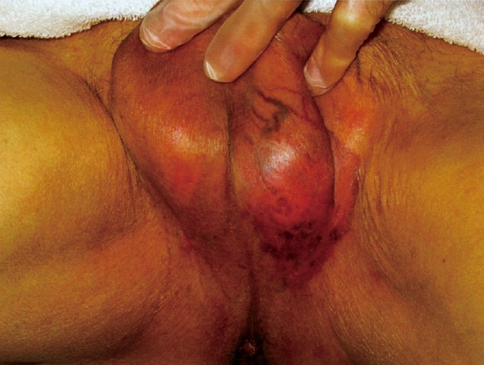
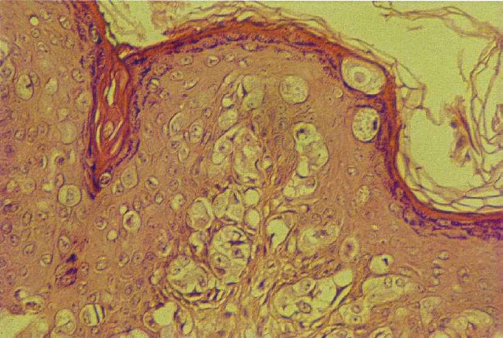
| 選択肢 | 解説 |
|---|---|
| ａ Bowen病 | Bowen病も陰部に生じる表皮内癌で臨床的には鑑別に挙がる。しかし病理は「表皮を構成する角化細胞そのものが全層で異型を示す」のに対し、本例は表皮内に明るい胞体をもつ大型細胞が孤在性・胞巣状に散在する像であり異なる（Q.181）。 |
| ｂ 基底細胞癌 | 基底細胞癌は顔面正中に好発し、陰囊はきわめてまれ。黒色光沢のある結節で中心が潰瘍化し、病理は柵状配列と裂隙を伴う腫瘍胞巣である。 |
| ｃ 悪性黒色腫 | 悪性黒色腫であれば黒色調が主体で、病理は異型メラノサイトの増殖とメラニン顆粒、S-100・HMB-45・Melan-A陽性を示す。3年かけて拡大する紅斑という提示に合致しない。 |
| ｄ 単純性血管腫 | 単純性血管腫（毛細血管奇形）は出生時から存在する境界明瞭な鮮紅色〜暗赤色の斑で、自然消退せず、身体の成長に比例して大きくなるだけ。67歳で新たに出現して3年で拡大することはなく、瘙痒も伴わない。 |
| ◯ ｅ 乳房外Paget病 | ①高齢男性の陰囊、②3年にわたる「市販薬で治らない」経過、③痒みを伴い緩徐に拡大する境界明瞭な紅色局面、④病理で表皮内に明るく広い胞体と大型核をもつPaget細胞が散在——乳房外Paget病である。PAS陽性・CK7陽性・CEA陽性、S-100陰性で確定し、治療はマッピング生検を踏まえた広範切除となる（Q.155・Q.170）。 |
| 段階 | 内容 |
|---|---|
| 疑う | 高齢者、外陰・肛囲・腋窩、境界明瞭な紅色局面、外用治療に反応せず緩徐に拡大 |
| 確定 | 生検（Paget細胞のpagetoid spread）＋免疫染色 CK7＋／CEA＋／S-100− |
| 進展範囲の評価 | マッピング生検（病変周囲を放射状に複数箇所生検） |
| 浸潤・転移の評価 | 結節・硬結があれば真皮浸潤を疑う。所属リンパ節エコー、CT。必要ならセンチネルリンパ節生検 |
| 続発性の除外 | 肛囲病変では下部消化管内視鏡、陰茎周囲では膀胱鏡（約1割が下部尿路・直腸肛門癌の表皮内進展） |
| 治療 | 広範切除（1〜3cmマージン）＋再建。切除不能例では放射線・化学療法 |